| 英語は5歳児の日本語で考えると面白いように話せる！ | |
| 奥村美里 | |
| kikoshobo (2015) | |
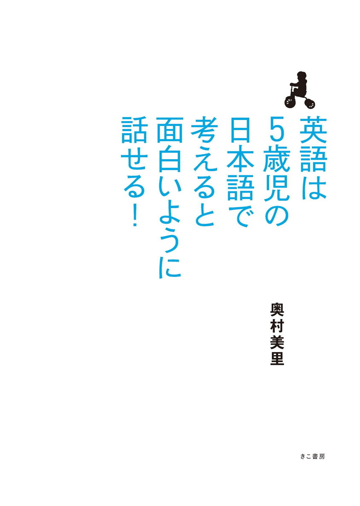
英語を話せる人は、「言い換えがうまい人」
英語学習業界に、長年かかわってきて、ずっと疑問に思っていたことがありました。
それは......
たくさん単語を知っていても、TOEICのハイスコアを持っていようとも、英語が話せない人がいる一方で、単語なんて全然知らないのにペラペラ話してしまう人がいるのはなぜなのだろう......？ということでした。
そこで、客観的に他の同時通訳の方を見ていて、
英語がうまい人 = 言い換え能力が高い人
ということに気が付きました。
私も通訳ですが、英語辞書の端から端まで知っていますか？と言われると、全然そんなことはありません。でも、スピーカーの言うことは全部訳せますし自分の言いたいことも全部表現できます。
なぜそんなことが可能なのか......
これはすべて、言い換え力が高い、ということにほかなりません。言い換え力とは、言いたいことを簡単な日本語にしてそれをすでに頭の中に入っている英単語に瞬時に言い換える力。
これが英語ペラペラのカギなのです。
この「言い換え」の能力が高くなればなるほど、自分の知っている単語だけで言いたいことを英語で表現できるようになります。
たとえば、こういうことがありました。
私は毎年年末に、英語コーチングをしているクライアントさんたちを招待して、ランチ会を開催しています。
以前のランチ会でのこと......。ネイティブスピーカーが２人ほど参加していたのですが、彼らは私から遠い位置に座っていたので、完全に、クライアントさんたちに対応をお任せしました。
すると、メニューを決める段になって「奥村さ～ん」とクライアントのＳさんからHELPの声が。
Ｓさん：「『メインメニューをチキンかスズキか選べる』って言いたいんですけど、スズキって英語で何ですか？」
私：「white fishでいいんじゃないの？」
※white fish = 白身魚
Ｓさん：「えっ、そんな...」
私：「大丈夫。アメリカでは、魚は、サーモンか白身魚の２種類しかないから！」
注） 日本では、魚の種類というと２０種類以上思い浮かびますが、アメリカではスーパーに行くと３〜４種類しか魚は売っていません。ここではそれらをまとめて「白身とサーモン」といっています。
ここで私は、「スズキ = 白身魚 =white fish」と言い換えたのです。瞬時に頭の中で。ですから、するっと言葉が出てきましたし、辞書を引かなくても済んだわけです。
海外に行って現地でもまれていると、大多数の人は英語が話せるようになります。それは、上記のような瞬時に英語に変換しなければならない言い換えトレーニングをたくさん積むからです。
たとえば、ファーストフード店で注文する時に「お持ち帰りで」と言いたいとしましょう。
「お持ち帰り」の単語がわからなくても、目の前には店員が「まだ？」という顔でにらんでいるし、後ろにはたくさんの人がお腹をすかせて待っている。こんな状況で悠長に辞書なんて引いていられません。なんとか自分の頭の中にある単語で「お持ち帰り」を組み立てると思います。ちなみに「お持ち帰りで」はTo go, please.と言いますが、たとえばI will eat at home.（家で食べます）と言っても言いたいことは通じますよね？
こういう「瞬時に頭の中に入っている単語で自分の意思を伝えなければいけない」状況下に毎日毎日おかれていると、言い換えがうまくなります。海外に住んでいると英語がうまくなるのは、実はただそれだけの話です。
これが、話せる人と話せない人の違いです。
５歳児英語とは？
頭で考えている日本語を、そのまま英語にしようとすると、いつまでも英語を話せるようになりません。
私たち、日本語ネイティブスピーカーが流暢に、しかも楽に、簡単に英語を話すには「５歳児英語」しかないと思っています。これなら、難しい単語を何千と覚えなくても、辞書を引かなくても、自分の英語力で、スラスラと話すことができるのです。
難しい日本語、ネイティブな日本語を、いったん、５歳でもわかるレベルの日本語に言い換えて、それを簡単な英語にする――これが「5歳児英語」です。
これなら、本当に簡単な単語で驚くほど多くのことがどんどん言えるようになります。
英語を話すのは実は簡単です。
単に、この「言い換え」がうまくなれば、あなたの英語が流暢に聞こえるし、言いたいことは伝わります。
なぜ私たちは、日本語で考えていることを英語にできないのか
まず、「言い換え」がうまくなるには、これを理解していなければなりません。
先日、私の開催している英語イベントで、映画の話をしていた初心者の男性が「うぅぅ......」と言葉に詰まってしまいました。
「何が言いたかったんですか？」と日本語で聞いてみたところ、彼は「『魂のこもった作品』って言いたかったんです」と答えました。ここに、私たちが日本語で考えていることを英語で表現できない理由が隠れています。
私たちは日本語のネイティブスピーカーです。
当たり前ですが、英単語よりも日本語の単語のほうが、はるかに多く知っています。
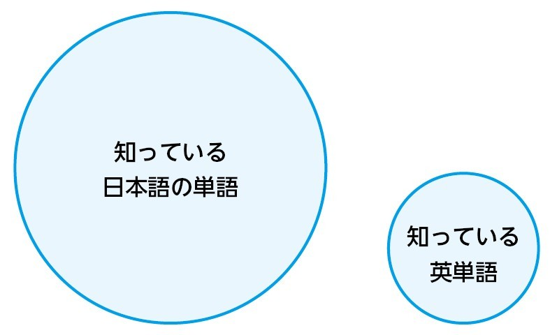
そのため、難しい言葉や表現をついつい使ってしまいます。たとえば、
「トレンドの把握」
「千秋楽」
「ほっぺたが落ちるような」
「牙城を崩す」
といった日本語としてはこなれた表現です。
先ほどの「魂のこもった作品」も難しい表現になるでしょう。こういう難しい言葉とか表現を、母国語ですから、自然に使ってしまいます。
そして英語を話す場面でも、とっさにその難しい言葉や難しい表現を、そのまま英語にしようと考えてしまうのです。すると「"把握"って何だっけ？」とか「ほっぺた？落ちる？」とわからなくなって、八方塞がりになり、「あぁ。私は英語ができないんだ......」となってしまうのです。
よく「ニュアンスが伝わらない」と言う方がいます。ズバリ言いますが「ニュアンス」という言葉は英語が一通り話せるようになるまで忘れてください。
その代わり、「英語は大体伝わればいいんだ！」と思ってください。日本語を頭で考えているまま、英語にしようとすると、いつまでも英語が話せません。
本書では、海外で遭遇するような「瞬時に英語に変換しなければならない言い換えトレーニング」をご紹介します。それらを通して、「英語って簡単なんだな！ こんなのでいいんだ！」ということを感じていただけると、とても嬉しいです。そして、その思いを持って英語を一言でも二言でも話してみてください。きっとあなたの世界は良い方向に変わり始めると思いますよ。
装丁／tobufune 小口翔平
はじめに
2ページ読むのに8時間
私は帰国子女でもインターナショナルスクール出身でもなく、おそらく、これをお読みのあなたと同じように中学生から英語を始め、This is a pen.から学びました。
英語は、新しい世界への扉を開いてくれるようで大好きでした。私は中学1年生の英語の先生に恵まれたおかげで、中学・高校とずっと英語の成績だけは良く、「英語なんてカンタン。自分は当然、すぐに英語をペラペラに喋れるようになる！」と思っていました。
でも、その小さな自信は大学に入って"こっぱみじん"に崩れ去ったのです。
私の入った大学には「語学研究所」という、さまざまな語学を勉強できる施設があり、英語を勉強したかった私は「楽勝だろう！」と思って「英語講読初級」という講座を取りました。
そこで待っていたのは、まさに英語地獄。いきなり英語のネイティブスピーカーがネイティブスピーカーのために書いた美術史の本を渡され、初めての授業で「2ページ読んできてください」と言われたのです。最初の1行すらわからず、8時間かかっても読み切れない状態でした。
半日かかっても、たったこれだけの理解しかできない自分への落胆。そして、今までの自分のプライドは何だったのだろう？ という思い。どこをどうやって、英語なんて楽勝だと思ったのか？ という恥ずかしさ。友人たちに、さも英語を話せるという態度で接してきたことへの後悔。
次の日、徹夜でボンヤリした頭でなんとか授業をこなし、家に帰って、これまでにないほど落ち込みました。
講座の教授には「訳すな！」と何度も言われ、その度に自分はだめだと落ち込みました。
気力を振り絞って授業を受ける毎日でした。
「留学 = 英語ペラペラ」は真っ赤な嘘
なんとか、英語を話したい......。
そんな悶々とした日々が、3ヶ月、4ヶ月と続きました。
そんなある日、「交換留学」があることを知り、それにチャレンジすることにしたのです。正直、不安でいっぱいでした。英語がまともに話せないのに、留学なんかしたら丸１日何も話すことなく１年を過ごすことになるのではないか？
そんな１年を過ごすことになったら、唯一残っている「話せるようになりたい」という思いさえ、粉々になってしまうのではないか......。
しかし私は、最後の勇気を振り絞って「交換留学」に参加することにしたのです。
当時の私には、留学に対する憧れと同時に、「留学すれば、英語ができるようになるでしょ。アメリカでは3歳の子どもだって英語を話しているじゃん」という思いがありました。
そして、「3ヶ月後には英語がペラペラになれる！」という期待を胸に、飛び込んだアメリカはワシントンのジョージタウン大学。
結論から言うと、10ヶ月現地にいても「ペラペラ」のうち「ペ」くらいにしかなりませんでした。
留学するとすぐにアメリカ人の友達ができる......という幻想。そう、そんな幻想を抱いていたんです、私も。
それ、絶対、絶対！ 嘘だと思います（笑）。
ルームメイトがアメリカ人で日常英会話に問題がない、という人を除いて、留学生の多く（特に語学留学で来ている人たち）は「アメリカ人の友達が欲しい」という悩みを抱えています。
なぜこんなことが起こるかというと、語学留学などで海外に行くと、周りは全部、アメリカ人以外。（そりゃそうだ、アメリカで英語を習う現地人なんていない！）
そして、カリフォルニアなどの大都市になると、1クラスの8～9割が日本人、というケースもあると聞いています。ホームステイをしていても、ホストは共働きで夜遅くまで帰ってこない......。こんな理由で、語学留学では特に現地人とお友達になるのは難しいかもしれません。
私に限って言えば、交換留学だったので、有り難いことにチャンスはたくさんありました。それにもかかわらず、できた友達は数人だけ。
なぜかというと......「中途半端な英語で話すのはハズカシー！」という思いから、１対１以外の場に積極的に出ていこうとしなかったのです。
ネイティブスピーカーが複数いると話すスピードは加速するし、突っ込むことはできないし、スラングなど理解できない言い回しは増えます。
結果として、ネイティブが複数いる場所では「寡黙な人」になってしまっていました。
「寡黙な人」というのは日本から一歩外に出ると「何を考えているのかわからない人」「つまらない人」というカテゴリー分けをされてしまいます。
「英語に自信がない......」と暗くなっていた私のところに、アメリカ人たちが大挙して押し寄せてくることはなかったのです。
もうひとつ、留学してわかったことは、日本語で聞いてわからないものは英語でもわからない！ということでした。
私の大学での専攻は商業。留学して学んだのは国際関係。時は大学3年度。はっきり言って国際関係学の専門用語なんか日本語でも頭に入っていないのです。日本語で聞いてわからないものは英語でもわからないんです！（当たり前ですが......）
大学では、普通の学生として授業を取っていたので、ものすごい量のリーディングの宿題が出ます。どれくらいかというと1週間500ページとか出るわけです。英語で500ページというと、多いです。かなり多いですよ！本を読んでいる自分が、夢に出てくることもありました。そして定期試験の前には、図書館は24時間オープン。深夜まで勉強の日々でした。
が、こんなことをしてもまだまだ「ペラペラ」の「ぺ」程度だったのです。
留学を振り返って反省したことをまとめると、
> 英語のリーディングは、読んでいる端から忘れてしまい、そして眠くなってしまう。
> 渡米したばかりの頃、授業が2～3割しかわからずテープレコーダーに録音してはいたが、いつも時間に追われていてテープレコーダーを実際に再生できなかった。
> 間違ったら恥ずかしいので授業中に質問したり意見を言ったりできなかった。（その結果、成績の評価が下がりました）。クラスメートに気軽に話しかけられなかった。
> いつも英語で話すときは文法的に正しいのかどうかドキドキしながら話していた。
> ちょっと英語を訂正されるとすぐ落ち込んでいた。
こうしたことがありました。
今、振り返って考えてみると、しゃべればよかったんですよ。とにかく。
話さないと本人が何を考えているのか、人となりもわからないし、誰かに「間違った英語で話すな！」と言われたわけではないので、自分の英語に自分から許可を出していなかったんですね。
そして「交換留学」で海外に行って1年......。
「留学すれば英語を話せる」ということは、真っ赤な嘘だとわかりました。
交換留学でも自分の思うようなレベルに達せなかった私は、失意のどん底、かなり落ち込みました。私には無理なのかもしれない。そう思う毎日でした。
しかし、とうとう私が「変わる日」が訪れたのです。
私はそれをきっかけに、大勢のネイティブスピーカーの前や公衆の面前でも、ハキハキと、堂々と！ 英語が話せるようになりました。
いったい私に何が起こったのでしょうか？
なぜ、急に英語を話せるようになったのでしょうか？
どうやってどん底から復活できたのでしょう？
実は英語は100語で話せる!?
私は大学を卒業後、専門商社で海外営業として5年ほど働きました。商社に入ってみて落ち込んだことは、私は何年もかけてやっと英語がそこそこできるようになったにもかかわらず、他の新入社員は英語が全く話せない状態で入ってきても、半年で業務を一通り英語でこなせるようになるということでした。
よく考えてみると、貿易で使われる単語は決まっていて、せいぜい100語程度。狭い分野であれば、少ない単語を覚えて使えるようになれば話せてしまう、というわけです。
これはどんな分野でも同じだと考えます。
ただこういう英語の覚え方をすると、専門分野では交渉など一通りできるようになりますが、語彙の不足が原因で、世間話も怪しい、という状態になりかねないので、注意が必要です。
専門商社を退社後、友人のセミナーオーガナイザーから、「シンガポールで、ハーブエッカーのセミナーの同時通訳をしませんか？」というオファーをいただきました。
注） ハーブエッカー･･･ニューヨーク・タイムズ第1位のベストセラー『ミリオネア・マインド 大金持ちになれる人』の著者
それを聞いたときは「とんでもない！ なぜ私が!?」と、血液が逆流したかと思うくらいに驚きました！
その頃、まだ私の英語は「ペラペラ」の「ペ」の字くらいのままでした。通訳学校にも行ったことがないし、そんな大それたことを自分ができるという自信もありませんでした。
でも、「あなたなら練習すればできますよ」の一言に背中を押され、友人からも励まされ、挑戦することに決めたのです。
この決断。これが、私が変わったきっかけでした。
このことがなかったら、私は今でも英語が話せないままだったと思います。
シンガポールに行ってみて驚いたこと。それはシングリッシュです。シンガポールの公用語は英語。
ところが、シンガポールには中国系の祖先をもつ華僑が多く、「これ本当に英語なの!?」と思ってしまうほど、中国語なまりの強い英語なのです。
頭をガツンとやられた、強烈なカルチャーショックでした。しかも、彼らは、日本人が理解できないくらい強いなまりで、5000人の参加者の前で「マイクを握ったら離さない勢い」で自分の意見や質問を述べているのです！
そのシンガポール人たちを見て、やっと自分の英語に「許可」が出ました。
もちろん、英語をきれいに話せるに越したことはない。
けれど、なまりがあってもいい。
英語は上手さを競う競技ではなく、コミュニケーションの道具なんだ！
そう気づいた時から、大勢のネイティブスピーカーの前でも、公衆の面前でも、堂々と英語が話せるようになりました。私の英語観は、この出来事で180度ひっくり返りました。目の前に広がる世界が、悲しみに彩られた暗い夜の世界から、太陽がさんさんと照らす、明るい華やかな世界に変わったのです。
私はそれから、誰にも臆することなく、どんどん話すことができるようになりました。上達のスピードは、友人から別人と思われるほど、早かったようです。
私を縛り付けていた「足かせ」が、バキンと音を立てて壊れた瞬間、と言ってもいいかもしれません。
このシンガポールでの同時通訳をきっかけに、『金持ち父さん、貧乏父さん』（筑摩書房）の著者として有名な、ロバート・キヨサキ氏や世界トップコーチのマイケル・ボルダック氏など、世界でも有数のスピーカーを通訳するまでになりました。
通訳の仕事以外にも、英語の通信講座を運営したり、英語コーチングをしたり、英語メルマガを発行したりしています。今まで通信講座やメルマガを通じ、2万5000人以上の方に英語学習についてアドバイスをしてきました。
「英語ができる世界」の素晴らしさを１人でも多くの人に伝えたい！そう思った瞬間から、英語が私のライフワークになりました。
英語はコミュニケーションの道具だと、改めて気づいてから、私は「大体伝わればいいか」と思えるようになりました。たとえ、まだ「ペラペラ」の「ペ」の字くらいしか英語を話せなくても、どんどん話すことが大事なんだと気づいたのです。それこそが、さらなる上達への一歩でした。
このように考えられるようになったからこそ、通訳としての今の私があるのです。
そこで私は、「ぺ」の字くらいの英語力で、どうやって何でも自分の言いたいことをどんどん話すか？ ということを考えてきました。
そして行き着いたのが、「５歳児英語」だったのです。
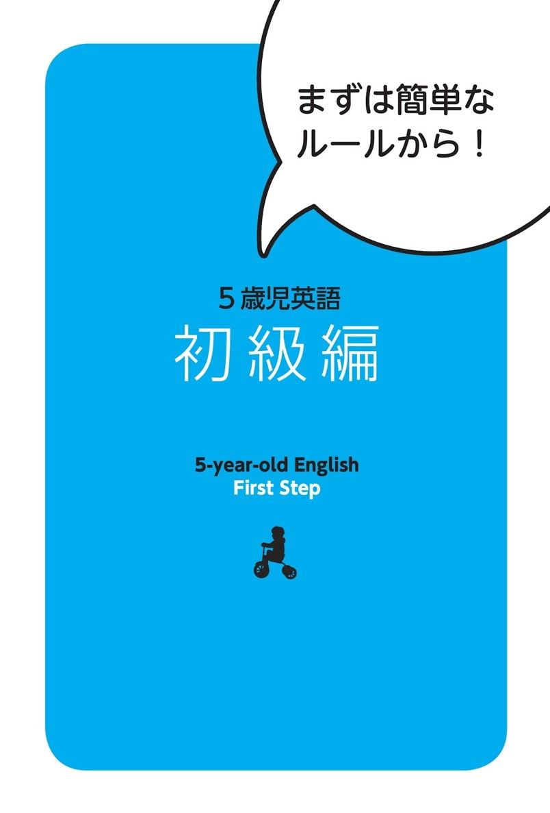
ルール１
分けて短くする
長い文章を英語にしようとする時、途中で訳がわからなくなって挫折することってありますよね。
英語がペラペラになりたければ、なるべく文を切って短く話すようにしましょう。そのほうが混乱しません。
ネイティブスピーカーも一見スピードが速いので、長い文章を話しているように聞こえますが、英語の字幕を見てみると、短い文章をたくさん話しています。
そのため５歳児英語では基本的に関係代名詞は使用禁止とします。混乱しなければ使ってもかまいませんが、自信がなければ関係代名詞は使わずに話したほうがいいでしょう。
ルール２
大胆に省略する
省略するとは、全部をきっちり伝えようと頑張らないということです。大体伝わればいいと割り切りましょう。あなたは一国の大統領でもなく、外交の話をしているわけでもありません。言葉に詰まったら「全部、正確に伝えようとしていないだろうか？」と自問自答してみましょう。完璧主義で真面目な人ほど「全部、完璧に伝える！」ということにこだわるあまり、英語を話すことができなくなってしまいます。
たとえば「納豆って何ですか？」= What's natto?と聞かれたときに、辞書を引くと「発酵した大豆」= fermented soy beansと出てきます。
でも、そんなに詳しく言わなくても、「大豆」= soybeansだけでもいいし、「日本の伝統的食べ物」= Japanese traditional foodと言っても大体のところは伝わります。それでいいじゃないですか。
完璧主義は英語マスターの敵です。完璧じゃなく、まずは大体伝わればいい、と考えましょう。それがペラペラへの近道です。
ルール１・２を使って、次の例文を見てみましょう。
例文1
前に座っている赤ちゃんが、
尋常ではない声で泣きっぱなしだった。
まずは２つの文に分けます。
①前に赤ちゃんが座っていた
②尋常ではない声で泣きっぱなしだった
それぞれ英語にするのが難しいところは省略します。
①前に赤ちゃんが座っていた→前に赤ちゃんがいた
②尋常ではない声で泣きっぱなしだった→たくさん泣いていた
「泣きっぱなし」より「たくさん泣く」のほうが簡単なので言い換えます。
これを英語にします。
①There was a baby in front of me.
②The baby was crying a lot.
これで十分言いたいことは伝わりますね。
例文2
猫の手も借りたいくらい忙しいの。
「猫の手も借りたい」とは人手が不足していて、ものすごく忙しい様子を言いますね。
ですが、忙しい度合いを詳しく言わなくても、「忙しい」ということが言えれば、大体のところは伝わります。
I'm very busy.
「とっても忙しいの」
このようにゆっくりやっていけばとても簡単ですが、会話中に瞬時に省略していくには、慣れることが必要です。
次のページからは言い換え例文です。自分だったらどう言い換えるか考えながら読んでみてください。
001 社内のうわさで...
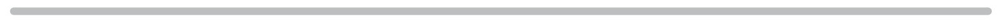
山田さんは番狂わせで
社長になったんだよ。
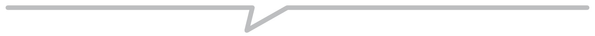
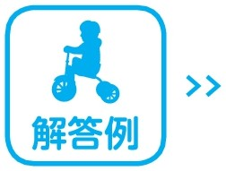 |
山田さんは新しい社長になった。 |
Mr. Yamada became thenew president.
I was very surprised to hear that.
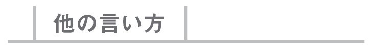
山田さんは次の社長になった。誰も予想もしてなかった。
Mr. Yamada became thenext president.Nobody expected it.
山田さんは新しい社長になった。彼が社長になるとは思ってなかったよ。
Mr. Yamada became the new president.
I didn't think he would be the president.
president 社長 expect ～予想する
002 転勤が決まった同僚が...
彼は空元気を
装っているね。
彼は元気じゃない。 |
Heis not fine.
Buthe acts like he is.
彼は大丈夫なふりをしている、でも大丈夫じゃないよ。
Hepretends like he's okay, buthe's not.
彼はハッピーじゃない。でもみんなにはそう思ってほしいみたいだ。
Heisn't happy. But hewants everyone to think he is.
pretend ～の（ような）ふりをする
003 部下が提出した企画書について...
ありきたりのアイディアじゃ
だめなんだよ。
|
このアイディアよりもっといいものができるよ。 |
We can do better than these ideas.
They arenot new at all.
よりよいアイディアが必要だ！
We need better ideas!
君ならより良くできるよ。
You can do better than that.
004 共感するときに便利な言い方
ご事情、
重々お察しいたします。
|
状況はわかっています。 |
I understand your situation.
＊「重々」を付けるなら...
状況はよくわかっています。
I understand your situationvery much.
＊今まさに辛い・大変なことを経験しているとき...
あなたがどんな経験をしているのかはわかってるよ。
I understand what you are going through.
005 来客にお茶菓子を出すときに...
よろしければ
お召し上がりください。
|
どうぞ食べてください。 |
Please eat it.
もしよければ、食べてください。
If you'd like, please eat it.
どうぞ、お上がりください。
Please have some.
甘いものが好きだといいのですが。
I hope you like sweets.
006 ２年前に結婚した同僚が...
彼には先日子どもが
生まれてすっかり親ばかだ。
|
彼には先日子どもが生まれた。彼は娘が大好き。 |
His first child was born the other day.He really loves her.
So he talks about her so much.
＊最後の文を言い換えると...
子どもの写真をたくさん撮っている。
He takes a lot of pictures of his child.
いつも子どもの写真を見せてくる。
He always shows me pictures of his child.
007 言葉を覚え始めた息子が...
息子は３歳で、私の言うことは
何でもおうむ返しするの。
|
息子は３歳だ。彼は私が言うことをすべてくり返す。 |
My son is 3 years old.
He repeats everything I say.
息子は３歳だ。いつも私の言うことをくり返す。
My son is 3 years old.
He repeats after me all the time.
息子は３歳だ。何度でも私の言葉をくり返すのが好きだ。
My son is 3 years old.
He likes repeating my words over and over.
008 運動会の400ｍリレー...
正々堂々と勝負しよう！
|
フェアにいこう！ |
Let's be fair!
公平にプレイしよう。
Let's play fair.
＊これを言う人の気持ちを考えて、言い換えると...
全力を尽くそう！
Let's give our 100%!
009 子育てをしていて...
聞き分けのない子は困る。
|
私は困っている。子どもが言うことを聞かない。 |
I'm having trouble.
My children don't listen to me.
どうしたらいいかわからない。子どもが言うことを聞かない。
I don't know what to do.
My children don't listen to me.
＊子どもが１人の場合は...
娘／息子が言うことを聞かない。
My daughter／My son doesn't listen to me.
010 失敗してしまった...
何か、奥の手はないの？
|
他に何かアイディアないの？ |
Don't you haveany other ideas?
他に何かアイディアある？
Do you haveany other ideas?
他にやり方はないのかな？
Isn't thereany other way?
011 大きな仕事を任されたときの一言...
できる限り頑張ります。
|
ベストを尽くします。 |
I'll do my best.
できる限りベストを尽くします。
I'll do my bestas much as possible.
お任せください。
You can count on me.
ご期待に応えますよ。（=がっかりさせはしませんよ）
I won't disappoint you.
count on 頼りにする／期待する
012 出張で時間がないけれど...
折角だから
土地のものが食べたい。
|
毎日ここには来ない。 |
I don't come here every day.
I want to eat something local.
＊たとえば大阪に来ているとすると...
大阪にいるのでお好み焼きを食べよう。
Now we are in Osaka, so let's eat Okonomiyaki.
013 夏休みの計画を立てようとしたのに...
今年は飛石連休で
海外には行けなさそうだ。
|
長い休みが取れないので、今年は海外に行けない。 |
I can't take a long vacation.
So I can't go abroad this year.
＊具体的に日数を入れてみると...
３連休しかないから、海外は無理だわ。
I only have a three day weekend, so I can't go abroad.
※abroadを overseas（海外）や other countries（他の国）foreign country（外国）と言い換えてもいいですね。
014 片思いの彼女をデートに誘おうとしている友人に...
当たって砕けろ！
|
とにかくやろう！ |
Let's (just) do it!
できるよ！
You can do it!
がんばって！
Good luck!
幸運を！
Break a leg!
＊Good luckと同じような場面で使います。
015 たまたま行ったライブで...
彼の歌声があまりにも
美しいので聞き惚れてしまった。
|
彼の歌は美しかった。だから聞き続けた。 |
His singing was beautiful.
So I continued listening.
I loved it.
彼の歌声がとても気に入った。とっても美しかった。
I really liked his singing.
It was so beautiful.
彼の歌は美しかった。私はとても好きだった。なので聴き続けた。
His song was beautiful.I loved it. I kept listening.
016 なかなか恋人ができなかった友人...
彼は、モデルの恋人ができて
優越感に浸っている。
|
彼はガールフレンドができた。彼女はモデル。 |
He got a girl friend. She's a model.
He's very proud of that.
＊最後の文を言い換えると...
彼は自慢している。
He's bragging about it.
今や、自分はみんなより上だと思っている。
Now he thinks he's better than everyone.
brag 〜を自慢する
017 初デートで...
夕食に髪の毛が入っていて
デートが台無しになったんだ。
|
夕食に髪の毛があった。 |
There was a hair in my dinner.
I couldn't enjoy our date anymore.
夕食に入っていた髪の毛はデートをダメにした。
A hair in my dinnerspoiled our date.
彼女と夕食をとっているとき、料理に髪の毛があることに気付いた。ぼくの気分は最悪だった。
When I had dinner with my girlfriend, I found a hair in my dish.My mood was terrible.
spoil 〜をダメにする
018 最近付き合った彼女と...
ロマンチックなデート中に、
母から電話がかかってきて
興ざめしてしまった。
|
ロマンチックなデート中だった。 |
I was on a romantic date.
My mother called me suddenly.
And I could not get back in the mood.
＊最後の文を言い換えると...
本当にそれが嫌だった。
And I really didn't like it.
デートに戻る気になれなかった。
I didn'twant to go back to the date.
I didn'tfeel like going back to the date.
suddenly 突然に
019 同僚がショックで寝込んでしまった...
彼女は結婚詐欺に
あいました。
|
彼女のボーイフレンドは結婚すると約束していて、彼女は彼にお金をあげた。彼はお金をとって逃げた。 |
Her boyfriend promised to marry herand she gave him money.He took the money and ran away.
彼女には婚約者がいた。
でもその人は彼女からお金をもらった後で逃げた。
She had afiancé. But heescaped after getting money from her.
020 東京の名所のひとつ...
東京大神宮は
縁結びの神様よ。
|
東京大神宮に行けば、ボーイフレンドができるよ。 |
If you go to Tokyo Daijingu,you can get a boyfriend.
多くの人が東京大神宮に行く。
というのも彼らはボーイフレンドやガールフレンドがほしいからだ。
A lot of people go to Tokyo Daijingu.Because they want to get girlfriends or boyfriends.
東京大神宮には恋愛の神様がいるよ。
There isgod of love in Tokyo Daijingu.
021 日曜日の午後...
彼女の膝枕でうたた寝を
するのが夢なんだ。
|
ガールフレンドのひざで寝たい。 |
I want tosleep on my girlfriend'slap.
ガールフレンドの足の上でうたた寝をしたい。
I want totake a nap on my girlfriend'slegs.
※It's my dream. （それが僕の夢なんだ）と付け加えてもいいですね。
lap ひざ take a nap うたた寝
022 同僚が暇そうにしていたので...
ちょっと雑用頼んでもいい？
|
ちょっといい？用事があるんだけど。 |
Do you have a minute?
I have something for you.
お願いがあるんだけど。
Can I ask you a favor?
きみの助けが必要だよ。
I need your help.
023 夫婦喧嘩の末...
「別れる」と言ったら
妻にすがりつかれた。
|
別れたいと妻に言った。 |
I told my wife I wanted to break up with her.She really didn't like that idea.
妻に別れたいと言ったら泣き叫んで「いやよ！」と言われた。
When I told my wife I wanted to break up with her,she cried and screamed saying "Noooooooooo!"
＊「別れたいと妻に言った」を言い換えると...
妻に、離婚したいと言った。
I told my wifeI wanted to divorce.
妻に、一緒に住みたくないと言った。
I told my wifeI don't want to live with her.
024 波乱万丈な人生を送った大女優が...
彼女は赤裸々に
自分の過去を語った。
|
彼女は自分の過去について話した。 |
Shetalked about her past.
Shewas very honest about it.
彼女は自分の過去について話した。何も隠さなかった。
She talked about her past. She didn'thide anything.
彼女は過去の話をした。すべてを話してくれた。
She talked about her past. She talked abouteverything.
025 いつも自信のなさそうな友人は...
彼は顔に
劣等感があるんだ。
|
彼は自分の顔が好きじゃない。 |
He doesn't like his face.
みんなは自分よりハンサムだと思っている。
He thinkseveryone's more handsome than he is.
彼は顔のせいで失敗すると思っている。
He thinkshe fails because of his face.
もっとハンサムだったらなあと思っている。
He wish he were more handsome.
英語力がUPする！文化の違いコラム①
怒らせるかもしれない!?
要注意な褒め言葉
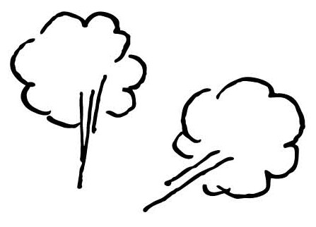
むかーしむかし、その昔、
アメリカ人の友人と、共通の友人の話をしていたときに
私は、「彼女って色白よねー」という意味で、
She's so white!と言いました。
そしたら友人の反応は
You are so harsh!（ちょっと、それってひどくない？）
でした。
でも...、日本だと色白ってすごい褒め言葉ですよね？ このときに初めて、日本語と英語の褒め言葉って違うんじゃないの？ と私は気付いたのです。
「色白」と言いたくてwhiteやpaleを使うと、
「青白い」= 「ちょっと外に出たほうがいいんじゃない？」というふうに受け取られるようです。
欧米では日焼けがステータスなため、色白は褒め言葉になりません。
逆に「日焼けしているね！」が褒め言葉なんです。
fair skin(色白の肌）を使うと、褒め言葉になりえるとのことですが、男性に対してはどちらにしても貶し言葉になるので使わないほうがいいでしょう。
他にも、「？？？」という顔をされるであろう、日本独特の褒め言葉があるのでご紹介します。初めて来日して、これを言われた外国人たちは面食らうみたいです。
カジュアル編
言っても気を悪くはされないけれど、「？？？」という顔はされるかもしれません。
①鼻が高いよね
鼻が高い、という観念自体がないようです。
②足が長いよね
これは、褒め言葉でもなんでもなくて、ただの「観察」のようです。
③顔が小さいよね＆ほりが深いよね
これらの観念も存在しないとのことです。
④箸使いがうまいですね
子供でも使えるんだからいちいち褒めるほうが変、だそうです（笑）
怒らせるかもしれない!?編
ここからはうっかり言うと怒らせるかもしれない褒め言葉です。
①色白ですね
先ほど言ったとおり、これは貶しているように受け取られてしまうので注意しましょう！
②いいお嫁さんになれますよ
女性差別発言で侮辱されたように感じるそうですので、外国人女性に詰め寄られたくない人は、使用を控えたほうがいいかもしれません。もともと、家事や料理するのは女性の役目、というところから端を発した表現なので、現代の女性には反感を買ってしまうようです。
You are gonna make someone very happy.
と言えば同じようなニュアンスが伝わりますが、「よく気が付く」程度で使うのではなく、「料理の腕が素晴らしい」などと言うときに使うようです。
では逆を見ていきましょう。日本ではあまり言わないけれど、英語ではよく使われる褒め言葉！
１）tall
２）beautiful eyes
３）curvy
３）のcurvyは女性の「曲線美」を意味する言葉です。つまり「ガリガリではなくて女性ならではのふくよかな身体」を言います。そのほうが英語圏では好まれるようです。
例）She's got some extra pounds, but she's really curvy.
（彼女はちょっと体重が標準以上かもしれないけど、すごく曲線美なんだよね。）
ちなみに、ちょっと何かを褒めたいとき、ありますよね。「そのカバンいいね」とか「そのジャケットいいね」などと言いたいときです。
I like +褒める対象で簡単に言い表せます。女性の方はI love +褒める対象でもＯＫです。
026 お金を拾って交番に届けたら落とし主が不明で...
計らずも大金が手に入った。
|
大金を手に入れた。 |
I got a lot of money.
I didn't expect it.
大金を手に入れた。このお金はどこからかやってきた。
I got a lot of money.It came out of nowhere.
027 山頂から見下ろした景色は...
その景色は
まさに絶景だった。
|
その景色は素晴らしかった。 |
The view was amazing.
I couldn't believe my eyes.
その景色は素晴らしかった！
The scenery wasoutstanding!
The scenery wasfantastic.
outstanding （他のものより）目立っている
028 安く旅行に行きたいけれど...
格安航空会社が多いが、
安全面は大丈夫かな？
|
安い航空会社が多い。でも安全なのかな？ |
There are many cheap airlines.
But are they safe?
安全だと思う？
Do you think they are safe?
大丈夫だと思う？
Do you think they are okay?
029 温泉旅行を計画中...
久しぶりの旅行なので
露天風呂付きの部屋がいいな。
|
最後に旅行に行ったのを思い出せない。 |
I can't remember the last time I went traveling. So I want to stay in a room withan outside bath.
＊「久しぶりの旅行」を言い換えると...
前回の旅行からしばらくぶりだ。
It's been a while since the last time I traveled.
長いこと旅行に行ってなかった。
I haven't traveled for a long time.
030 ピクニックの最中に...
紅葉がきれいだね！
|
秋の葉っぱはきれいだね！ |
Autumn leaves are beautiful!
見て！秋だねえ。
Look! Autumn is here.
＊すでにその場所にいて、目の前にある紅葉のことを言う場合...
とってもきれいね。
It's so beautiful.
031 ようやく冬が終わって...
新緑の季節だね
|
春だね！ |
It'sspring!
春が来たね。
Spring has come!
＊すでに目の前に景色がある場合...
わ～緑だね！
It's sogreen!
032 旅行が苦手な理由は...
枕が変わると眠れないんだ。
|
自分のベッドが恋しい。このベッドじゃ眠れない。 |
I miss my bed.
I can't sleep in this bed.
私の枕が必要だ。それなしでは眠れない。
I need my pillow.
I can't sleep without it.
033 来月の誕生日で、もう...
四捨五入すると
もう40歳だ。
|
僕は今40歳近い。 |
Now I'mclose to 40.
もうすぐ40歳だ。
Now I'malmost 40.
今35歳で、あと5年で40だ。
Now I'm 35 and I only have five years left until I'm 40!
034 頑固な母に...
やせ我慢しないで
欲しいなら欲しいって
言えばいいじゃない。
|
それが欲しいなら、欲しいって言ってよ。 |
Tell me you want it, if you want it.
欲しいって言って。
Just tell me you want it.
自分の気持ちに正直になってよ。
Please be honest with your feeling.
honest 正直な
035 年末に孫が熱を出したと聞いて...
孫がお正月に帰ってくる
というのはぬか喜びに終わった。
|
お正月に家に来る孫のことでわくわくしていたの。 |
I was excited about my grandchild coming home for New Years.
But it didn't happen.
I was very sad.
孫はお正月に私に会いに来るはずだった。
とっても会いたかった。でも来られなかった。
My grandchildren were going to come to see me for New Years.
I really wanted to see them.
But they couldn't come.
be excited 〜わくわくする
036 男手ひとつで育てた娘は...
娘は妻の忘れ形見なんです。
|
妻が亡くなった。娘は今僕が持てるすべてだ。 |
My wife passed away.
My daughter is all I have now.
妻が死んだ。妻は娘を私に残してくれた。
My wife died.
She left me my daughter.
娘は、妻を思い出させる。
My daughter reminds me of my wife.
pass away （人）が亡くなる
037 もと警官の父は...
うちの父は情け容赦ない。
|
お父さんはとても厳しい。 |
My father isvery strict.
お父さんが怖い。
I'm scared of my father.
お父さんはあまり優しくない。
My father isnot very kind.
be scared of〜 〜が怖い
038 いつも小うるさい父に...
説教はやめてよ。
|
どうしろとか言わないで。 |
Don't tell me what to do.
もう話すのはやめて。
Stop talking.
もう十分よ。
I had enough.
039 時間を忘れるほど、おしゃべりに夢中になっていて...
門限を破ったら
父はカンカンだった。
|
夜遅く帰った。お父さんは怒った。 |
I came home late.
My father was angry.
＊門限が11時で、11:30に帰ってきたとすると...
私はお父さんと11時に帰ると約束した。
帰ってきたのは11:30だった。お父さんはとっても怒っていた。
I promised my father I'd come home by 11.
I came home at 11:30. He was so mad.
mad 怒る（angryよりも軽い表現）
040 新しいものを受け入れない父に対して...
時代錯誤も甚だしいよ！
|
とっても古いよ！ |
It's so old!
今は1960年なの！？
Is this 1960!?
＊ネイティブスピーカーがよく使う表現です。
古風だな。
It's very old fashioned.
041 去年他界した父は...
父はわき目も振らず
仕事ばかりの人生でした。
|
お父さんは人生をいつも仕事をしながら生きた。 |
My father lived his lifealways working.
お父さんは生きている間は、いつも働いていた。
When my father was alive,he was always working.
お父さんは仕事中毒だった。
My father wasa workaholic.
042 毎日ギリギリの生活で...
私は税金を滞納している。
|
私は税金を払う必要がある。長いこと払っていない。 |
I need to pay taxes.
I haven't paid them for a long time.
＊具体的に年数を言うと...
税金を5年も払っていない。
I haven't paid tax for 5 years.
043 食事中に、何気なく聞いたら...
答えにくい質問をしたのか
彼は口籠ってしまった。
|
彼に悪い質問をしたのかも。彼はしゃべらなくなった。 |
Maybe I asked him a bad question.He stopped talking.
私の質問に答えるのをやめてしまった。
He stopped answeringmy question.
044 お酒は弱いほうだけど...
このワインは口当たりがいい。
|
このワインはマイルドよ。 |
This wine is verymild.
このワイン好き。とってもマイルドよ。
I like this wine.It's very mild.
＊I can drink a lot. （いくらでも飲めるわ）などを加えてもいいですね。
045 初めて日本に来た海外からの友人が...
リビングに土足で入られて
発狂寸前だった。
|
彼は靴のまま居間に入ってきた。すごく怒ったよ。 |
He came into my living room with his shoes on.I was so angry.
＊「発狂寸前」をI was so mad. I was so upset.と省略して言い換えられます。
046 忘年会シーズンで...
このままじゃ
太ること間違いなし。
|
私、絶対太る。 |
I'lldefinitely gain weight.
体重が増えるのは疑う余地がない。
I have no doubt I'll gain weight.
太ることを確信しているわ！
I'm sure I'll put on some weight.
＊fatは「超太い」というアメリカ人の太っているイメージなので、日本人には適さないと考えました。
definitely 絶対に
047 この問題で悩んでいる女性は多い...
不妊治療は日本では
大きな問題となっている。
|
日本の女性の多くは妊娠できない。 |
Many women in Japancan't get pregnant. They want to have babies but can't. That's a big problem.
日本の多くの女性は赤ちゃんをもてない。
彼らはその問題を治すために医者に行く。
Many women in Japancan't have babies. They goto see doctors to fix the problems.
pregnant 妊娠している
048 アメリカ経済の話になって...
貧富の差はアメリカでは
深刻な問題だ。
|
アメリカではお金持ちもいる。 |
Some people have a lot of money in America. Others don't. The gap is very big. It's a very big problem in America now.
お金持ちと貧しい人の間のギャップは
アメリカでとても大きな問題だ。
The gap between rich and poor is a very big problem in America.
Challenge１
自分なりの言い方を考えてみよう！
01 テストで悪い点を取ったので親に大目玉をくらった。
02 妻は置手紙をして出て行った。
03 なんとかお力添えいただけないでしょうか？
04 そんなこと口が裂けても彼女には言えないよ。
5歳児英語・言い換え例
01
I got a bad score on the test. My parents got angry.
テストで悪い点を取った。親が怒った。
I failed the test. My parents were not happy.
試験で落第した。両親はうれしそうじゃなかった。
02
My wife left our house. There was a letter from her.
妻は出て行った。彼女から手紙があった。
My wife left. She left me a letter.
妻は出て行った。手紙を私に残した。
03
Could /can you (please) help me?
助けていただけますか？
I need your help. Please help me.
あなたの助けが必要です。お助けください。
Please give me your assistance.
あなたの支援をください。
04
I cannot tell that to her.
そんなこと彼女に言えないよ。
I'm not going to tell that to her.
そんなこと彼女に言うつもりはないよ。
If I tell that to her, she will be shocked.
彼女にそんなこと言ったら、彼女ショックを受けちゃうよ。
英語力がUPする！文化の違いコラム②
お酌をしても大丈夫？
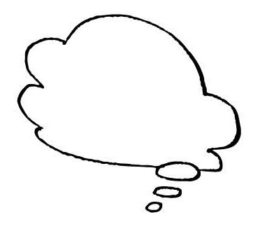
女性に関するマナーは、海外と日本で結構違いがあります。一番問題になるのが「お酌」。
日本社会では一般的に女性が男性にお酌をしますよね？
これを海外でやると......その男性に対して「気がある」とみなされてしまいます。
男性から女性へのお酌は普通ですが（と、いうかマナーでしょうか）、逆は誤解を招きます。
大学生のときに、ドイツ人学生の団体の受け入れをしたことがありました。
みんなで飲んでいたときに、ちょうど目の前に座っていた日本人大学生の女性がドイツ人男性にお酌をしました。日本的には「フツーじゃん？」と思いますが、私の隣に座っていたドイツ人女性が私の耳元でささやいたんです。
「ホラ、見て。彼女、彼に気があるのよ」
欧米ではレディーファーストがベースにあるためか、お酌は男性がするものです。女性の皆様、外国人男性へのお酌はくれぐれもご注意を！
また、日本人男性の方、外国人と食事をしていて女性に「お酌をしてもらえるもの」とは思わないほうが良いです。基本的に彼らは手酌で飲んでいます。
お酒は自分のペースで飲む物ですから、強制的なお酌は嫌われます。日本に帰ってきて日本企業で働き始めたとき、お酌をさせられてびっくりしました。
そういえば、こんなこともありました。
ドイツに出張中、ヨーロッパ中のお客さんを招いてイベントをしました。そのイベントでの夕食の際、同じテーブルに座った女性駐在員の方が「お客さんにお酌をせよ」と言うんですね。
私は日本からのヘルプで来ているので、渋々お酌をしましたが、向こうのお客さんもちょっと困惑気味でした。
後から考えてみると、おそらく彼女はそんなことは教えてもらえずに海外で女性１人、がんばっていたんだ、と思います。
何はともあれ海外では、女性はお酌をしないのが無難だと思います。
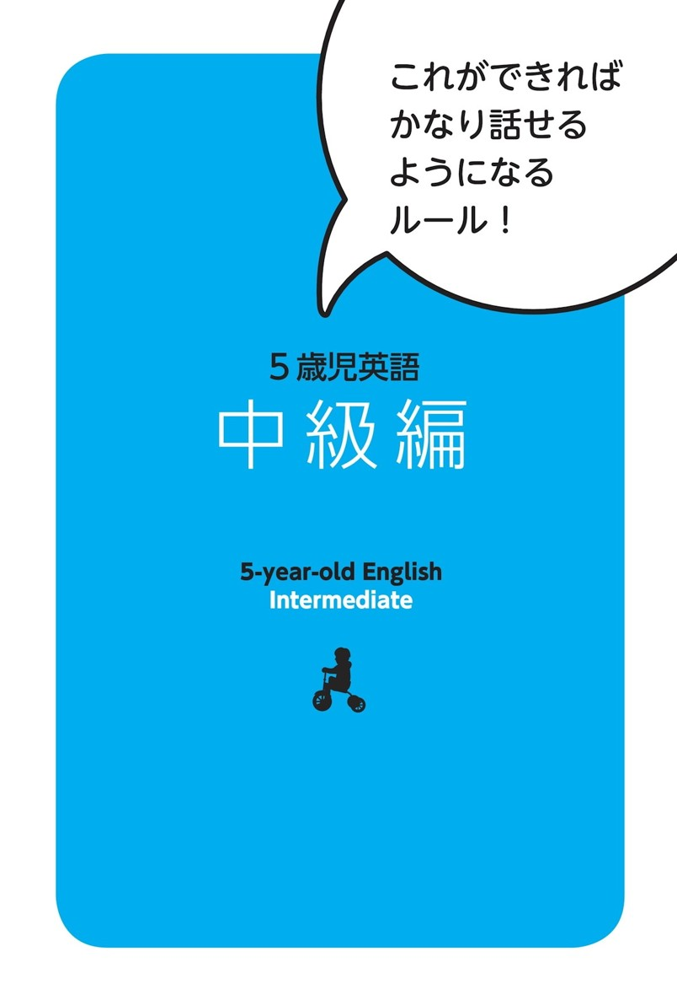
ルール３
具体的にする
私たちは日本語ネイティブスピーカーなので、あいまいな表現をたくさん知っています。たとえば「微妙」とか「サクサク」、「まったり」、「うっとうしい」などです。これらの言葉は状況によって全く意味が異なってきます。
１つの言葉に当てはめようとするのではなく、具体的に何が言いたいのか？ に注目しましょう。
ルール４
意味を考えて言い換える
「この言葉は英語で何と言うんだろう？」と和英辞典を引きたくなったら、ぐっと堪えて、「言葉の意味を考えて、言い換えるとどうなるかな？」と考えましょう。
難しい語句の筆頭として熟語があげられます。熟語は大体、漢字の意味をベースに構成されており、短い言葉の中に多くの意味がこめられていることも少なくありません。そのため、辞書を引かずにはわからない！と思ってしまいますが、その英単語がわからなくても伝えることができるのです。
ルール3・4を使って、次の例文を見てみましょう。
例文3
あの人ってうっとうしいけど、なんか憎めない。
ここでは「何がうっとうしいのか？」がポイントになります。そこを具体的に表せば伝わりますね。
たとえば、
①自分の話ばかりする =only talk about oneself
②すぐに泣く = cry easily
③おしゃべり = talkative／love to talk
などで、「うっとうしい」感じが表せます。
「なんか憎めない」はどうでしょうか。５歳児にもわかるくらい簡単にすると、「嫌いじゃない」と言い換えられるでしょう。
「あの人」を男性だと仮定して、「うっとうしい」を「③おしゃべり」とします。
He loves to talk. But I don't dislike him.
「あの人っておしゃべり。でも嫌いじゃない」
これで十分伝わります。
例文4
思春期の子どもは難しいね。
「思春期」の意味を考えて、言い換えると「十代」と言えます。日本語でもカタカナで「ティーンエージャー」と言います。思春期は通常十代の時期のことを指しますから、この言い換えができればあとは簡単です。
"Teenagers" are difficult.
「十代の子は難しいね」
「ティーンエージャー」という言い換えが浮かばなければ、その年齢を言っても伝わりますね。
"13 to 19 years old children" are difficult.
「13歳から19歳までの子は難しいね」
049 通勤ラッシュで...
電車で痴漢にあった。
|
電車で誰かがさわってきた。 |
Someone touched me on the train.
電車に変な人がいた。私にさわった。
There was a strange man on the train.He touched me.
＊もし知っていればpervert（痴漢）をそのまま使うこともできます。
電車に痴漢がいた。さわってきた。
There wasa pervert on the train. He touched me.
050 宿題もせずにゲームばかりしている子どもに...
『勉強しなさい』と
口が酸っぱくなるほど
子どもに言っている。
|
いつも『勉強しろ！』と子どもに言っている。 |
I tell my kids "Study!"all the time.
百万回も『勉強しろ！』と子どもに言っている。
I tell my kids "Study!"a million times.
＊over and over（何度も繰り返し）を付け加えてもいいですね。
051 話題がそれてしまうけれど...
余談ですが、
彼には子どもがいます。
|
これはあなたに言わなくてもいいかもしれないけど、彼は子どもがいるよ。 |
Maybe I don't have to tell you this,but he has a child.
ところで、彼には子どもがいるよ。
By the way, he has a child.
関係ないかもしれないけど、彼には子どもがいるよ。
It may not be relevant, but he has a child.
relevant 関係がある
052 ホームパーティーで...
彼らなら気を利かせて、
先に帰ったよ。
|
彼らは僕たちのために、もう帰ったよ。 |
They already leftfor us.
彼らは僕たちのことを考えて家に帰ったよ。
They thought about us and went home.
彼らは僕たちが２人きりになったほうがいいと思って帰ったよ。
They thoughtit was better for us to be alone and went home.
053 テレビを見ている子どもに...
油を売ってないで
さっさと勉強しなさいよ。
|
今、テレビを見るのをやめて、勉強を始めなさいよ。 |
Stop watching TV and start studying now.
時間をムダにするのをやめて勉強し始めなさい。
Stop wasting time and start studying.
054 突然やって来て根掘り葉掘り質問するので...
誰の差し金だ？
|
誰がそれを君に頼んだ？ |
Whoasked you to do that?
誰が君をここに送った？=（誰に頼まれてきた？）
Whosent you here?
055 お化け屋敷を怖がる友人に...
意気地なしだなあ。
しっかりしろよ。
|
弱虫だな。男らしくしろよ！ |
You're weak. Be a man!
＊女性の場合、Be a man!とは言えないので...
つべこべ言わずにやりなさい！
Just do it!
弱虫になるな！
Don't be a chicken!
056 話し合いに入れてくれない...
僕だけ蚊帳の外みたいだ。
|
誰も僕にその情報を教えてくれない。 |
Nobody tells me the information.
これを知らなかったのは僕だけだ。
Only I didn't know this.
誰も僕にその秘密を教えてくれない。ひとりぼっちだ。
Nobody tells me secrets.
I feel alone.
057 職場はどう？と聞かれて...
うちの職場は風通しがいい。
|
うちの職場では何でも話せる。 |
Wecan talk about anything in our office.
うちの職場ではみんなうまくやっている。
Everybodygets along well in my office.
うちの職場ではみんなお互いが好き。
Everybodylikes each otherin my office.
058 悩みはいろいろあるけれど...
忙しくしていると
気が紛れるからいいんだよね。
|
忙しいといろんなこと考えなくてよくて好きなんだ。 |
When I am busy,I don't have to think about many things and I like it.
＊「気がまぎれる」を「いろんなことを考えなくて好き」と表現していますが、具体的に気になっていることをそこに入れてもいいでしょう。
忙しいと妻の病気のことを考えなくていいからいいね。
When I'm busy,I don't have to think about my wife's sickness and I like it.
059 30歳を過ぎた友人に対して...
彼も年貢の納め時だな。
|
そろそろ彼も結婚するべき時だ。 |
It's about time he got married.
彼はまもなく結婚するだろう。
He'll get married soon.
＊「年貢の納め時」とは具体的に何か？と考えることがカギになりますね。たとえば他に...
彼も決断する時だ。
He needs to make a decision.
decision 決心／決断
060 娘が遊びに行かせてもらって...
先日は娘が
お世話になりまして...。
|
先日は娘を呼んでくれてありがとう。 |
Thank you for inviting my daughter the other day.
先日はありがとうございます。娘は楽しかったみたいです。
Thank you for the other day.
My daughter had a lot of fun.
061 ご子息がいなかったので、聞いてみたら...
彼が、社長の後継ぎだよ。
|
彼はこの会社の次の社長だよ。 |
He'll be the next president of this company.
彼はこの会社を引き継ぐよ。
He'lltake over this company.
062 週末、空いている？と聞かれて...
婚活に忙しい。
|
未来の夫(妻)を探しているので忙しい。 |
I'm busy becauseI'm searching for my future husband / wife.
結婚したい。だからパートナー探しをしている。
それで忙しくしている。
I want to get married. SoI'm searching for a partner. I've been busy doing that.
今年中に結婚したいの。だから出会いに忙しいの。
I want to get married this year. SoI'm busy meeting people.
063 婚活パーティーで出会った人に誘われたけど...
とても庶民的なデートだった。
|
とてもカジュアルなデートだった。 |
That was a verycasual date.
豪華なデートじゃなかった。
It wasnot a luxurious date.
公園に行って、マックへ行った。安いデートだったよ。
Wewent to a park and McDonald's.
It was acheap date.
luxurious 豪華な
064 いつも自慢ばかりしている...
彼女は見栄っ張りだ。
|
彼女は自分をよく見せたい。 |
Shewants to make herself look good.
彼女はみんなにお金持ちだと思われたい。
She wants everyoneto think she's rich.
彼女は実際よりもよく見せようとしている。
She wants tomake herself look better than she actually is.
actually 実際に
065 ゲリラ豪雨で...
本屋で雨宿りした。
|
雨がやむまで本屋にいた。 |
We stayed in a bookstoretill the rain stopped.
雨で濡れないように本屋に入った。
We went into a bookstoreso as not to get wet by the rain.
雨をよけるのに本屋に入った。
We went into a bookstore justto avoid the rain.
avoid よける／避ける
066 アメリカ人の同僚が日本に来て思ったこと...
日本人って律儀だよね。
|
日本人は時間に決して遅れない。 |
Japanese people arenever late.
日本人は人のことを気に掛ける→人のことを考える。
Japanese peoplethink about others.
日本人はとても礼儀正しい。
Japanese people areso polite.
polite 礼儀正しい
067 新しく始まるプロジェクトの前に...
景気づけに一杯やろう。
|
私たちのビジネスの成功を願って、飲みに行こう。 |
Let's have a drinkfor the success of our business.
＊具体的に何を景気づけるのか、明らかにすると英語で表現しやすくなります。
元気づけるために飲みにいこう。
Let's have a drinkto cheer you up.
＊「景気づけに」が難しい場合、省略して...
飲みに行こう！
Let's go drinking!
cheer up 〜を元気づける
068 息子さんは元気ですか？と聞かれて...
うちの息子は
何年も音信不通なんです。
|
何年も息子と話していません。 |
I haven't talked to my son for years.
長い間息子と会っていません。
I haven't seen my sonfor a long time.
息子は長い間電話してきてない。
My son hasn't called mefor a long time.
息子が元気でやっているかどうかは知らない。
I don't know how my son's doing.
069 今夜は飲みたい気分だ...
もう一杯だけ、
ビール付き合って？
|
私とビールもう一杯、飲んでくれる？ |
Can you drink one more beerwith me?
もう一杯、一緒にビール飲もう。
Let's have one more beertogether.
一緒にビールもう一杯いかがですか？
Would you have one more beerwith me?
070 今朝は急いでいたので...
新聞は斜め読みしたよ。
|
新聞を読んだよ。でも見出ししか見てない。 |
I read the newspaper.
ButI checked only the head lines.
新聞は手短に読んだよ。
I read the newspaper verybriefly.
新聞はざっと読んだよ。
Iglanced at the newspaper.
briefly 手短に glance ちらっと見る／ざっと読む
英語力がUPする！文化の違いコラム③
「なまり｣ってセクシー!?
みなさんの中には、かつての私のように
「ネイティブのような綺麗な発音で話したい！」と思われている方も多いのではないかと思います。
数年前に、私の「英語の発音」に対する概念をがらりと変えてしまうような出来事が起こりました。
告白します。
私は......日本語なまりの英語が恥ずかしいと思っていました。
何度アメリカ人から 「いいよねー、アクセント（なまり）のある英語ってセクシーだよね」と言われようが、「また始まったよ、いつものが」と受け流していました。すみません（笑）
ある時は「君のアクセントがすごくいい」と言われ頭にきて怒ったこともあります......。
ところが、アメリカのドラマを見ていると、
「英語がなまっている女性」＝「セクシー」 の構図で描かれることが多く（男性もそう描かれることが多いです）
「これはもしかしたらそうなのか......？」
と英語を学び始めて20年近くたって初めて考えました。
そして、アメリカ人の友人（男性）に聞いてみました。
「ねえ、ねえ、英語がなまってる女の人ってセクシーだと思う？」
「YEEEEEEEEEEEEEEEEEEEEEEESSSSS!!!」
「それってさー、あなただけじゃなくて他の人もそう思ってると思う？」
「Absolutely!（絶対そう！）」
ということで、ものすごく固定観念が変わりました。
「アクセント（なまり）のある英語」＝「セクシー」
おお！ 寡黙だった私の留学時代、返してほしい......（涙）
ただ日本語なまりの英語を喋るだけで自動的に「セクシー」って思われるのはお得ですよね？ ちょうど「京都訛りが素敵」というのと似ているようです。
ちなみに、英語でいう「セクシー」は性的な意味が必ずしも含まれておらず、 カジュアルな英語の褒め言葉の中では超一級の褒め言葉です。
皆さんも
「発音おかしいかも......」
「発音悪くて笑われるかも」
と思わずに、ぜひ、堂々と今のままの発音で英語を話してみてください。
071 「よろしく頼むよ！」と言われたので...
大船に乗った気持ちで
いてください。
|
何も心配しないでよ。 |
Don't worry about anything.
私を信用して。
Just trust me.
あなたは何も心配する必要はありません。
You don't need to worry about anything.
072 気難しい上司を上手くまるめ込んだ同僚に...
物は言いようだよね。
|
言い方はたくさんあるわね。 |
There are many ways you can say that.
うまいこと言ったね！
You put it very nicely!
＊物の言い方が...
うまいね！
You are good!
073 打ち合わせ中に...
それはとても
型破りな発想だね。
|
それはとてもユニークな／見事なアイディアだね。 |
That's a veryunique/amazing idea.
ワォ、そういうふうには考えなかったな。
Wow, I've never thought that way.
＊少し難しいかもしれませんが、unconventional（型にはまらない）やoff the wall（とっぴな）を使ってもいいでしょう。
074 会社を休んだ同僚に･...
昨日、仮病だったでしょ？
|
昨日、本当は病気じゃなかったでしょ？ |
Yesterday,you weren't really sick,were you?
昨日、本当に病気だったの？
Were you really sick yesterday?
＊たとえば風邪と言って休んでいたら...
昨日、風邪じゃなかったの知っているんだから。
I knowyou didn't have a cold yesterday.
075 重大ニュース！と言いながらなかなか言わないので...
出し惜しみしないでよ。
|
全部見せちゃいなよ。 |
Show me everything!
全部教えなさいよ！
Tell me everything!
＊Come on! （頼むよ！）と加えてもいいですね。
076 最近、急に忙しくなった...
人がやめたから
仕事のしわ寄せがきた。
|
１人職場からいなくなったので |
One person left our office soI'm very busy.
１人職場を辞めたので、彼の仕事もしなければいけない。
One person quit our office soI need to do his work, too.
もっと人が必要だ！ボブが辞めてから超忙しいんだよ。
We need more people!I've been so busy after Bob quit!
077 会議中に...
私情をはさむなよ。
|
個人的な気持ちはおいといて。 |
Set asideyour personal feelings.
プライベートと仕事を分けて。
Keepyour personaland public lives separate.
＊個人的なことより、仕事のことだけ考えて、という意味で...
仕事に集中して。
Focus on work.
078 父も年をとってきて...
うちの父は
最近角が取れた。
|
お父さんは、前はとても厳しかった。 |
My father was very strict before.
But he is kind now.
お父さんは、前はとても厳しかった。
最近変わって、やさしくなった。
My father was very strict before.
Recentlyhe changed and he's kind.
以前と比べて、お父さんはとてもやさしくなった。
My fatheris lot nicer compared to before.
compare 〜と比べる
079 忙しくて買い物に行く時間がなかったので...
ありあわせで夕食を作ったよ。
|
冷蔵庫にあったもので夕飯を作ったよ。 |
I made dinner withwhat was in the fridge.
台所のもので夕飯を作ったよ。
I made dinner withthe stuff in the kitchen.
台所の食べ物で夕飯を作ったよ。
I made dinner withsome food in the kitchen.
＊もっと具体的にして...
冷蔵庫に卵と人参しかなかった。だからそれを使って料理したよ。
I had only eggs and carrots. So I cooked dinner with them.
fridge 冷蔵庫
080 相手が言いにくそうにしているので...
遠回しな言い方は
やめてください。
|
正直に言ってよ。 |
Please tell mehonestly.
率直に言って。
Pleasebe direct with me.
＊少し上級者向けですが、こんな言い方もあります。
要点を言ってよ。
Pleaseget to the point.
遠回しな言い方は避けて。
Don't beat around the bush.
要件にすぐ入ってね。
Pleasecut to the chase.
081 時間とお金があるなら...
秘境の旅にあこがれる。
|
誰も知らないどこかに行きたい。 |
I want to gosomewhere nobody knows.
まだ誰も発見していないどこかに行きたい。
I want to gosomewhere nobody discovered yet.
エキゾチックな場所に行きたい。
I want to go toan exotic place.
discover 〜を発見する
082 落ち込んでいる友人に...
押してダメなら引いてみよう。
|
もし失敗したら、違うやり方でできるよ。 |
If you fail, you can do it in a different way.
ひとつのやり方がうまくいかなければ、
新しいやり方を試してみるべきだよ。
If one way doesn't work, you should try something new.
fail 失敗する
083 相手を悲しませないためには...
嘘も方便だよね。
|
嘘をつくことが時には良くもなりえるよね。 |
Telling a lie can be good sometimes.
嘘は良くないよ。でもたまには必要だ。
Lies are not good.
But sometimes they are needed.
＊物事をうまく運ぶために時には嘘をついてもしかたがない、という意味で...
時には欲しいものを得るためにうそを言うのが必要だ。
Sometimes you need to tell a lie to get what you want.
084 励ますつもりで言ったのに...
彼女の一言は
逆効果だった。
|
彼女のコメントは事態を良くしなかった。 |
Her commentdidn't make things better.
彼女の言ったことは裏目に出た。
What she saidbackfired on her.
＊逆効果の内容を具体的に言ってもいいですね
彼女の言葉は彼をとても怒らせた。
Her wordmade him very angry.
backfire 裏目に出る
085 高校生になって...
最近、うちの娘は生意気だ。
|
最近、娘は私の言うことを聞かない。 |
Recently my daughterdoesn't listen to me.
最近、娘は私に口答えする。
Recently my daughtertalks back to me.
彼女は何でも好きなことをする。
She does whatever she wants.
と加えてもいいですね。
086 男性を顔で選んでばかりいる友人に...
あなたって本当に
面食いよね。
|
あなたって本当にハンサムな男性が好きなのね。 |
Youreally like handsome men.
あなたってハンサムな男性にだけは興味あるよね。
Youare interested in handsome men only.
あなたってハンサムな男性に夢中ね。
Youare into handsome men only.
be interested in 〜に興味がある
087 話し合いの最中に...
あなたの話は
つじつまが合わないのよ。
|
あなたの話はわからない。 |
I don't understand your story.
あなたの話は論理的じゃない。
Your story isnot logical.
あなた（の言っていること）は筋が通らない。
Youdon't make sense.
make sense 筋が通る／道理にかなう
088 もっとおしゃれに気をつかってほしいのに...
夫は服に無頓着だ。
|
夫は服に興味がない。 |
My husbandisn't interested in clothes.
夫は着るものを気にもしない。
My husbanddoesn't care about what he wears.
夫は何でも着る。
My husbandwears anything.
089 去年、転職して...
やっと仕事が
軌道に乗ってきた。
|
やっと仕事に慣れてきた。 |
Finally I'mgetting used to my job.
（自分の）ビジネスがうまくいっている。
Finally my business isdoing well.
１年かかって、やっと仕事に慣れたよ。
It took me a yearto get used to my job.
get （be） used to 〜に慣れる
090 海外から来た友人に相撲が見たいと言われたが...
昨日が、大相撲の
千秋楽だったんだよ。
|
昨日が相撲シーズンの最後の日だったんだよ。 |
Yesterday was thelast day of Sumo season.
昨日、今シーズンの相撲は終わったよ。
This season's Sumo gamesfinished yesterday.
昨日、相撲シーズンが終わったばかりだ。
Sumo seasonjust finished yesterday.
091 危ないことばかりしているので...
あいつは本当に
命知らずだ。
|
あいつは何も怖がらない。 |
Heis scared of nothing.
あいつは本当に勇気がある人だ。
He's reallya courageous person.
彼は何でもやっちゃう。
Hewill do anything.
courageous 勇気のある
英語力がUPする！文化の違いコラム④
英語であなたの会話が
続かないワケ
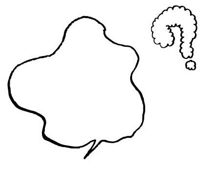
先日、アメリカ人の友人から
「日本人にHow was your weekend?と聞いてもGood!としか言わないのはなぜ？」
と聞かれました。
日本では「週末どうだった？」「んー普通」は当たり前のやり取りですが、アメリカではこう答えるのはちょっと無愛想な感じです。
まず、日本では「週末は何したの？」というのは友人同士を除き、あまり一般的な質問ではありませんよね？
すると、あまり知らない人に英語で聞かれてもGoodとかOkayとか言ってしまいます。
しかし、アメリカではHow was your weekend?は日本で言うと「寒くなったね」程度の世間話なので、職場であまりよく知らない人に聞かれても、どこに行った、何をした、まで詳細に話すのが普通です。
「週末はどうだった？」と聞かれたら、
「土曜日は家族でお寿司を食べに行って、子どもがそこで寝ちゃってさ、大変だったよ。日曜は家でまったりしていたな。うちは鍋が週末の定番なんだよ」
くらいのことは答えます（笑）。
ですから、アメリカ人は日本でHow was your weekend?と聞いたとき、上記くらいの話が返ってくる、と当然期待します。
それなのに、Great! Ok!で返されたら、会話はそこで終了です。
逆にアメリカ人と会話をしていて「話題に詰まったな～」と思ったら、
How was your weekend?とか
What's your plan for this weekend?
と聞いてみてください。大体、相手は詳細に話してくれるので、そこで突っ込んで質問すれば、会話のキャッチボールが続きます。
同様に、日本では趣味の話も初対面の人とはあまりしませんがアメリカではこれも初対面でＯＫな話題です。
What's your hobby?よりも
What do you do in your free time?で「趣味は何？」
という聞き方をします。
092 あれがイヤ、これがイヤというので...
あなたは男性の選り好みが
過ぎるんじゃない？
|
あなたは男性に本当にうるさいよ。 |
You arevery picky with men.
新しい男性に出会うたびに、あなたは満足できないのね。
Whenever you meet new guys,you aren't satisfied.
ボーイフレンドを見つけるのに時間がかかるよ。
It'll take a long time for you to get a boyfriend.
パーフェクトな男性を見つけるのには時間がかかるよ。
It'll take a long time for youto find the perfect guy.
picky with 〜にうるさい satisfy 満足させる
093 人が残したものまで食べるので...
あなたってほんと、
食い意地が張っているよね。
|
あなたって何でも食べたいのね？ |
Youwant to eat everything, don't you?
わー、たくさん食べるのね。
Wow, you can eat a lot.
あなたって本当に食べるのが好きね！
You surelike eating!
094 難しいことはわかっているけど...
束縛されない生活を送りたい。
|
自由に生きたい。 |
I want to livefreely.
＊束縛の内容を具体的に言ってみましょう。
両親があれこれ私に言わなければいいのに。
I wish my parents would stop telling me what to do.
旦那から離れられればいいのに。
I wish I could be away from my husband.
095 恋に悩んでいる友人が...
やっぱり、
彼って脈なしかな？
|
彼って私のこと好きじゃないと思う？ |
Do you thinkhe doesn't like me?
彼って他の人が好きなのかな？
Do you thinkhe likes someone else?
私は彼の恋人になれるかな？
Do you thinkI can be his girlfriend?
096 小言が多いので...
母の言うことは
聞き流すに限る。
|
私にとってお母さんの言うことは |
It's better for menot to pay attention to what my mom says.
お母さんの言うことは聞かないほうがいい。
It's better for menot to listen to my mother.
いつも私はお母さんの言うことには耳を貸さない。
I don't usually listen to my mother.
097 恋愛に消極的な友人が...
彼女、男性に
免疫がないのよね。
|
彼女は男性に慣れていないのよね。 |
She's not used to men.
彼女は男性と話すのが苦手。
Sheisn't good at talking to men.
＊具体的にどう「免疫がない」のか言ってみましょう。
彼女はボーイフレンドができたことがまったくない。
She'snever had a boyfriend.
彼女は中高と女子校だった。
She went to anall-girls' middle school and high school.
098 四六時中、娘の心配をしているので...
君は娘に対して
過保護すぎないか？
|
君は娘の世話をしすぎかも。 |
Maybe youtake care of our daughter too much.
君は娘のことを考えすぎだよ。
Youthink about our daughter too much.
＊もし知っていればoverprotective（過保護）をそのまま使うこともできます。
君は娘に過保護だ。
You areoverprotective of our daughter.
099 予定外のことが起こったと報告があったけれど...
それは想定内です。
|
そのことはもう考えていたよ。 |
Wealready thought about it.
それは予想していました。
Weexpected it.
＊辞書で「想定内」と引くと
within the scope of the assumptionと出てきますが、
上記の５歳児英語のほうが自然に伝わります。
100 人には言えないような話なので...
この話は内緒にして
おきたいから、口裏を合わせて。
|
この話は秘密なの。同じ話をしようよ。 |
This story is secret.
Let's tell the same story.
話したことを秘密のままにしたいの。誰にも言わずにおこう。
I want to keep what I told you a secret.Let's not tell anyone about it.
これは秘密にしておきたいの。このことで誰かに聞かれても、何も言わないで。
I want to keep this a secret. If someone asks you about this,please don't say anything.
101 熊に襲われそうになって...
私たちは
命からがら逃げた。
|
私たちは逃げた。ギリギリだった。 |
We escaped.It was so close.
私たちは死に物狂いで逃げた。
Weran for our lives.
私たちは必死に逃げた。
We ranlike there was no tomorrow.
like there is no tomorrow 必死に／たがが外れたように
102 私の母はずっと入院していて...
母はガンだったが
良いお医者様のおかげで
九死に一生を得た。
|
お母さんはガンで死にかけていた。 |
My mother was dying of cancer. Buta good doctor saved her.
＊九死に一生を得る（ほとんど助かる見込みがないのに奇跡的に助かる）の部分を強調したければ...
お母さんはガンだったが、良い医者が彼女を助けた。奇跡のようだった。
My mother had cancer but a good doctor saved her.It was like a miracle.
103 毎朝の習慣で、ポストに行ったら...
今日は新聞の休刊日だ。
|
昨日は祝日だったから今日は新聞がないよ。 |
We don't get a newspaper today because yesterday was a national holiday.
今日は新聞こないよ。
We don't get newspaperstoday.
今日、新聞は配達されないよ。
They don't deliver newspapers today.
＊「休む」をrestとしてしまいそうが、restは生き物や人間が休息をとるときに使います。
104 一体、何回やるんだろう...
彼って懲りないね。
|
彼って学ばないよね。 |
He never learns!
彼は自分の過ちから何も学ばない。
He never learns from his mistakes.
彼は同じ間違いを何度もくり返す。
Herepeats the same mistakes over and over.
105 北のほうに行くといつもツイてない...
私にとって北は鬼門だ。
|
北は私にとって運が悪いの。 |
North isbad luck for me.
北は私にいつも幸運をくれない。
Northnever brings me good luck.
北に行くと、悪いことばかり起こる。
Only bad things happen, when I go to north.
106 年金暮らしなので...
うちの母は
かなり質素な生活をしている。
|
お母さんの生活はとてもシンプルだ。 |
My mother's life is verysimple.
お母さんはとてもシンプルな生活をしている。
My mother lives a verysimple life.
お母さんはまったくお金を使わない。
My motherdoesn't spend money at all.
107 みんなで楽しく食事をしていて...
彼女がその発言をしたら
場が凍ってしまった。
|
彼女がそう言ったら、みんな話すのをやめた。 |
When she said that,everybody stopped talking.
彼女のコメントがみんなを黙らせた。
Her comment made people quiet.
彼女のコメントにみんなびっくりした。
Everyone was surprised by her comment.
108 みんなから評判の悪い友人は...
彼は本当に
どうしようもないやつだ。
|
彼はまったく責任感がない。信用できない。 |
He'snot responsible at all.
I can't trust him.
＊ややきつめの言い方ですが...
彼は役立たず。
He's auseless guy.
彼はまったくダメ。
He'sno good.
responsible 責任感のある
109 手作り菓子をおすそ分けして...
保存は常温で
大丈夫ですよ。
|
冷蔵庫に入れなくてもいいよ。 |
Youdon't have to put it in the fridge.
それ、冷やさなくていいよ。
Youdon't have to chill it.
＊やや難しい言い方になりますが...
部屋の温度（=常温）で保存できるよ。
You can store itat room temperature.
temperature 温度
110 子どもが生まれたので...
夫が育児休暇を取った。
|
夫が子どもの面倒をみるための休みを取った。 |
My husband tookholidays/days-off to take care of our baby.
夫は、息子を出産したあとに、私を助けるために休暇を取った。
My husband took holidays to help me after giving a birth to a boy.
＊もちろん、parental leaveやchildcare leave（育児休暇）を知っていればそのまま使ってもＯＫです。
111 長年準備をしてきたが...
機は熟した！
計画を実行して。
|
タイミングは完璧だ！ 計画を実行して。 |
The timing is perfect.
Let's start our plan.
今がそれをやるべき時だ。
It's time to do it!
ちょうどよいタイミングを待っていた。私たちの計画を始める時だ！
I was waiting for the right moment. Now is the time we should start our plan.
112 ストレスがたまるなあ...
身動きが取れない。
|
とても忙しい！ |
I'm very busy.
どこにも行けないよ。
I can't go anywhere.
仕事にかかりきりだ。
I'm stuck at work.
stuck（stickの過去形） 動けなくさせる／行き詰らせる
113 会社で彼が嫌われている原因は...
彼は上司にばかり媚びる。
|
彼は上司にだけ親切だ。 |
He's only nice to his boss.
彼は上司の意見にいつも賛成する。
Healways agreeswith his boss.
彼は上司に対して態度を変える。
Hechanges his attitude toward his boss.
114 病室の机の上に...
うちの父は亡くなるとき、
遺書を書いた。
|
お父さんは死ぬときに、私たちに手紙を残した。 |
When my father died,he left us letters.
お父さんは死ぬときに、私たちに手紙を書いた。
When my father died,he wrote a letter for us.
＊もし知っていればwill（遺書）をそのまま使ってもいいですね。
お父さんは遺書を残した。
My father left us awill.
115 先日離婚した友人が...
もう結婚はこりごりだよ。
|
もう絶対に結婚したくない。 |
I never want to get married again.
かつて結婚していた。もう十分だよ。
I used to be married.I had enough.
独身生活は最高だ。
Single life is wonderful!
116 どちらを取るか...
それは苦渋の決断だった。
|
決めるのが難しかった。 |
It wasdifficult to decide.
それはとっても難しい決定だった。
It was avery difficult decision.
それを決めることは簡単ではなかった。
Making that decisionwasn't easy.
117 久しぶりの同窓会で...
楽しくて
羽目を外しすぎたみたい。
|
すごく楽しくて、やりすぎたかも。 |
It was so fun andmaybe I went too far.
すごく楽しくて、かなりワイルドだった。
It was so fun and it waspretty wild.
今夜はとってもハッピーで、飲みすぎた。
I was too happy tonight, andI drank too much.
パーティーを楽しみすぎた。
旧友とおしゃべりしていて、帰りが遅くなった。
I enjoyed the party too much. I was chatting with my old friends, andI came home very late.
Challenge２
自分なりの言い方を考えてみよう！
01 彼は私の恩人だ。
02 好き嫌いはありますか？
03 彼の言うことを鵜呑みにしちゃだめよ。
04 このカフェ、居心地いいよね。
5歳児英語・言い換え例
01
He saved my life.
彼は命を救ってくれた。
I owe it to him.
彼のおかげです。
Thanks to him, I got a job.
彼のおかげで仕事を得られた。
He did so many things for me.
彼は私にとてもたくさんのことをしてくれた。
02
Do you have anything you can't eat?
食べられないものはありますか？
Are you picky about food?
食べ物はえり好みしますか？
Do you have likes and dislikes about food?
食べ物に関して好き嫌いはありますか？
03
Don't believe what he says.
彼が言うことは信じちゃだめよ。
You shouldn't trust him.
彼のことを信用すべきではない。
He sometimes tells lies. Don't believe everything he tells you.
彼は時々、うそをつくんだ。だから言われたことは全部信じちゃだめだよ。
04
I can relax here.
ここではリラックスできる。
This café is so comfortable.
このカフェはとても快適だ。
I like this café a lot.
このカフェ、大好きなんだよ。
英語力がUPする！文化の違いコラム⑤
日本的な相槌はウザい？
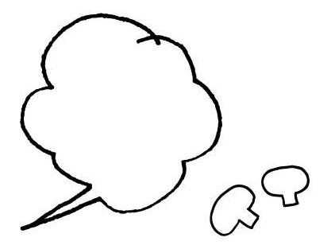
会話中のマナーについてですが、日本語ではあまり会話中に名前が出てくることはありません。でも英語では（特にアメリカでは）会話中に名前を呼ぶのはごくごく普通のことです。
What do you wanna eat?（何食べたい？）
と聞くよりも
What do you wanna eat, Bob?（何食べたい、ボブ？）
と名前を文末に持ってくるだけで親しみがわきます。名前は文頭でもかまいませんよ。
日本にずっと住んでいる外国人は名前を呼ぶ感覚がだんだん薄れてきて、一度、日本人である私のほうが「なんで名前を呼んでくれないのっ！」と逆切れしたことがあります（笑）。
また、日本語は相槌が多いですよね？
「うん、うん」「へー」という、相手に「あなたの話聞いていますよ」というシグナルを送るアレです。
これをそのまま英語に訳すと"yes" "ah-huh" "okay"となるのですが、この日本的相槌を日本的感覚でやられると、ネイティブスピーカーにはすっごくウザがられます。
私は、英語を学び始めた初期の頃にこれをやってしまい、「頼むからやめてくれ！」とクレームを受けたことがあります。
電話でも相槌がないので、最初は聴いているのか聴いていないのかわからなくて、
Are you listening to me?（聴いている？）
とよく聞いていました。
英語にも「うん、うん」「へー」という音だけの相槌の代わりになるものがあります。
英語は誇張の言語なので、相槌もちょっと誇張して
Wow! （ワォ！）
Great! （すごい！）
How nice! （なんてすごいんだ！）
Oh no... （オーノー...）
などを使うと、相手も盛り上がってもっと話したくなって会話も楽しくなりますよ。

ルール５
魔法の言葉「そもそも何が言いたいの？」
改めて言いますが、
「日本語を５歳児にもわかるレベルに言い換えて、それを簡単な英語にする」
これが５歳児英語の核となる考え方です。
難しい言葉や言い回しが出てきて、部分的に言い換えても「ん？」「わ、わからない......」となったら、文章全体を見て、「そもそも何が言いたいの？」「簡単にすると？」とつぶやいてみましょう。
何を言いたいのかがわかれば、気持ちを表現できるようになり、難しい語句を使わずに、簡単な英語に直しやすくなります。
ルール5を使って、次の例文を見てみましょう。
例文5
彼女は苦しい胸中を吐露した。
「彼女は苦しい胸中を吐露した」･･･そもそも何が言いたいのでしょうか？ まずは、目の前に５歳の子どもがいると思って、わかりやすい日本語に直してみましょう。
私なら「彼女は困っていることがありました。それを話しました」と文を短く分けて、熟語を言い換えます。「困っていること」は「問題」= problemと、さらに言い換えます。これを英語にすると、
She had some problems. She talked about them.
「彼女は問題がありました。それを話しました」
必ずしも「問題」とする必要はありません。たとえば
She was worried. She talked about it.
「彼女は心配していました。それを話しました」
としてもいいでしょう。
要するに「苦しそう・困っていそう」ということが伝わればいいのです。
118 別れ際に...
金輪際、電話なんか
してこないで！
|
電話しないで！ 絶対！ |
Don't call me!EVER!
２度と電話しないで！
Never call me!
あんたと話をするのはこれで最後よ！
This is the last time I talk to you!
119 商談の席で...
彼ら、話に乗ってきたぞ。
|
彼ら、この商談に興味があるね。 |
Theyare interested in this business.
彼ら興味を示しているね。
They areshowing interest.
彼ら、熱心に私の話を聞き始めたぞ。
Theystarted to listen to me ardently.
ardently 熱心に
120 旦那さんに対して不満ある？と聞かれたので...
うちの旦那は
いつも生返事なの。
|
旦那は私の言うこと聞いてないと思う。 |
I don't thinkmy husband listens to me.
旦那は私の話に興味がない。
My husbandisn't interested in my story.
旦那はまじめに私の話を聞いてくれない。
My husbanddoesn't listen to me seriously.
seriously まじめに／真剣に
121 デートに遅刻したら、彼女が怒っていたので...
悪気はなかったんだ。
|
きみを怒らせたくなかったんだ。 |
I didn't want to make you angry.
わざとじゃなかったんだ。
I didn't do it on purpose.
遅れて本当にごめん。どう埋め合わせしたらいいかな？
I'm sorry I'm late.How can I make it up to you?
と加えてもいいですね。
purpose 意図
122 最近オープンしたばかりのお店なのに...
このレストランは
閑古鳥が鳴いている。
|
このレストランはもっとお客さんが必要だね。 |
This restaurantneeds more customers.
お客さんがほとんどいないね。
There areonly few customers here.
このレストランは人気がない。
This restaurantisn't popular.
123 頑固な父を説得している弟にアドバイス...
馬の耳に念仏だよ。
|
時間をムダにしないで。 |
Don't waste your time.
お父さんは耳を貸さないよ。
My father wouldn't listen (to you).
お父さんはイエスとは言わないよ。
My father wouldn't say yes.
124 朝から上司の機嫌が悪い...
触らぬ神に祟りなしだ。
|
もう彼女はほっとこう。 |
Let's justleave her alone.
わ～機嫌悪いね。
Wow, she'sin a bad mood.
今日は彼女に近づかないほうがいい。
Youshould not get close to her today.
125 クライアントが無理な注文をしてきたので...
お役に立てず残念です。
|
（あなたを）助けてあげられなくてごめんね。 |
I'm sorry I can not help you.
ごめんね、あなたとはビジネスできない。
I'm sorry, but I can't do business with you.
＊辞書に載っている
We are sorry that we cannot serve you.
I'm sorry that I cannot be of assistance.
はとても固い言い方です。上記の５歳児英語のほうが自然な言い方になります。
126 社交辞令ですが...
折角のご招待なのですが
残念です。
|
とても行きたいんだけど、行けないんだ。 |
I really want to go but I can't.
先約があります。
I have other appointment.
ご招待ありがとうございます。でも行けないです。
Thank you for your invitation, but I can't go.
＊I won't go.(=I will not go.)と言う人もいますが、これでは「（行けるけど）行かない」となり、ちょっと失礼な言い方になるので、I can'tを使うほうがいいですね。
127 人前では言いにくい話があったので...
食事の邪魔をして
申し訳ないのですが、
内密にお話があるんです。
|
すみません、個人的に話したいのですが？ |
Excuse me.
Can I talk to you in private?
夕食中に邪魔してすみませんが、個人的に話せますか？
I'm sorry to bother you when you are having dinner, butcan we talk in private?
すみませんが、お話があるんです。
Excuse me,but I need to talk to you.
＊「内密に」を強調するなら、他人に聞かれたくない感じを出して
会議室で話したいのですが？
Can we talkin a meeting room?
128 女友達とお茶をしていて...
目の下に
マスカラついているよ。
|
鏡見たほうがいいよ。 |
You should see yourself in the mirror.
目の下黒くなってるよ。
Under your eyes is all black.
129 人間関係をお金で解決していると...
金の切れ目が縁の切れ目よ。
|
お金がなくなる時に |
People leave you when you have no more money.
お金がなくなる時に誰も友達ではなくなるよ。
Nobody will be your friend when you have no more money.
お金がないことは関係の終わりを意味するよ。
No money means the end of relationships.
relationship 関係
130 スケジュールがいっぱいで忙しいときに...
そんなこと
急に言われても困ります。
|
もっと時間が必要です。 |
I need more time.
＊「えー...それこそ、そんなこと急に言われても...」という感じの人もいるかもしれませんね（笑）こういう時こそ「そもそも何が言いたいの？」と考えましょう。
今、忙しいから後で来てくれない？
Please come back later, I'm busy now.
今はできない。私は忙しい/今は時間がない。
I can't do it now.I'm busy /I don't have time now.
131 彼の乗っていた飛行機が事故に...
無事だと聞いて
胸を撫で下ろした。
|
彼は大丈夫だと聞きました。ほっとしたよ。 |
I heard he's okay.I feel relieved.
＊「胸を撫で下ろした」ということはそれまで心配していたということなので、
彼は大丈夫だった。私は心配していた。
He was okay.I was worried.
relieved 安心の／ほっとした
132 セールの時期になると...
つい財布の紐が緩んじゃう。
|
欲しくないけど物を買っちゃう。 |
I don't want to, but I buy things.
自分をコントロールできず、物を買っちゃう。
I can not control myself, I just buy things.
物を買うつもりなかったけど、買い物を楽しんじゃった。
I wasn't going to buy anythings, but I enjoyed shopping.
133 さぼっている同僚を見て...
彼は頭がいいのに
仕事をさぼるなんて
宝の持ち腐れだ。
|
彼は頭がいいけど仕事をしない。 |
He's very smart but he's not working.He is wasting his time.
＊最後の文を言い換えると...
なんて無駄なんだ！
What a waste!
彼は働くべきだ！
He should work!
134 まだ十代の娘が「結婚する」と言い出して...
そんなことは論外だ。
|
そんなの、受け入れられない。 |
I can't accept that.
それは問題外だ。
That'sout of the question.
それはありえない。
It'simpossible.
accept 受け入れる
135 すぐに表情に出す友人に...
「嘘だ」って
顔に書いてあるよ。
|
私、それが嘘ってわかるわ（言えるわ）。 |
I can tell it's a lie.
あなた、嘘ついているでしょ？
You aretelling a lie, aren't you?
あなたが嘘ついているって知っているわよ。
I know you're telling a lie.
英語力がUPする！文化の違いコラム⑥
年齢を聞いても大丈夫？
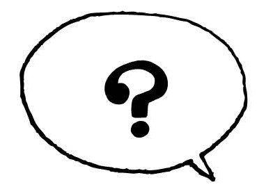
特に日本人男性に多いのですが......。
女性に年齢を聞くのはとっても失礼なので聞かないでください！
日本ではよく聞かれるので、海外から来た人はびっくりします。
日本でも聞かないほうがいいと思いますが、海外はもっとシビアなのでやめましょう。
とはいえ、私も一度だけ海外で年齢を聞かれたことがあります。
それはフランスの観光地で「27歳以下は入場料無料」の施設でした。友達のフランス人夫妻と訪れましたが、そこで年齢を聞かれたのが海外での唯一の経験です。
そのときも
How old are you? 「何歳ですか？」
という直接的な聞き方ではなく、
May I ask how old you are? 「何歳か聞いてもいいですか？」
と言われました。
このMay I ask～?「～を聞いてもいいですか？」というのはとっても便利な表現で、パーソナルな事項・聞きにくい事項（年齢・宗教・結婚しているのか・人種のバックグラウンド・年収などお金がらみの話）をどうしても聞かなければならないときに活用できます。
このパーソナルな事項は避けるのがもっとも無難ですが、どうしても聞かなければいけないときには、
May I ask～? を使って聞かれるといいと思います。
136 あることないこと...
どんどん話に
尾ひれがついている。
|
話がどんどん大きくなっている。 |
The story isgetting bigger and bigger.
もとの話からすると、まったく話が別物になっている。
The story isvery different from the original.
その話は少しずつ変わっているよ。
The story ischanging little by little.
137 夫を亡くした友人が...
息子は私の生きがいなの。
|
私にとって息子はすべてなの。 |
My son is everything to me.
私は息子のために生きている。
Ilive for my son.
息子を育てることが私にとって大切なこと。
It is important for me to bring up my son.
bring up 〜を育てる
138 余計なことをして...
事を荒立てるつもりは
ないんだ。
|
事を悪化させたくないんだ。 |
I don't want tomake things worse.
彼を怒らせるつもりはなかったんだ。
I didn't mean tomake him angry.
誰も怒らせたくないんだ。
I don't want toupset anyone.
upset かき乱す／怒らせる
139 デート中についつい仕事の話をしてしまい...
愚痴っぽくなってごめん。
|
そんなこと聞かせてごめん。 |
I'm sorry you hadto hear that.
ごめん、今日はネガティブだね。
Sorry,I am very negative today.
ごめん、今日はたくさん不満を言っているね。
Sorry,I'm complaining a lot today.
complain 不満を言う
140 ３時間も会議が続いていて...
このままじゃ水掛け論だ。
|
これじゃどこにも行かない。（これじゃ結論が出ない） |
We arenot going anywhere.
このミーティング終われないよ。
Wecan't finish this meeting.
これじゃ結論にたどり着けない。
Wecan't come to a conclusion like this.
conclusion 結論
141 英語が上手くならなくて、ストレスがたまる...
英語を見ると
拒否反応を起こしてしまいます。
|
英語を見ることすらしたくない。 |
I don't even want to look at English.
英語、キライ！
Ihate English.
英語を見ると、気分がよくない。
When I look at English,I don't feel well.
142 仕事を手伝ってあげたのに、失敗したからって...
逆恨みはやめてよ。
|
私に責任を押し付けないでよ。 |
Stopputting responsibility on me.
私のせいにしないでよ。
Don't putblame on me.
私のせいじゃないわ。
It's not my fault.
blame 〜のせいにする fault 責任
143 私の兄は時計のコレクターで...
彼は時計のことになると
金に糸目をつけない。
|
彼は時計にいくら使おうが気にしない。 |
Hedoesn't care how much he spends on a watch.
彼は時計を集めるのが大好きだ。大金を出して買う。
He loves collecting watches.He spends a lot of money to buy them.
彼が時計を買うときは、お金は問題にならない。
Money isn't issue for him when he buys watches.
144 目を掛けてくれている上司が...
私の顔に泥を塗ることは
許さない。
|
がっかりさせるなよ。 |
Don't disappoint me.
頼りにしているよ。
I'm counting on you.
失敗するなよ。
Don't mess up.
disappoint がっかりさせる mess up 台なしにする
145 さっき夕飯、食べたばかりなのに...
なんか口寂しいな。
|
なんか食べたい...。 |
I want to eat something.
なんか、食べたい気分。
I feel like eating something.
もっと食べたい。
I want to eat more.
146 困ったことがあると寄ってくる友人に...
あなた、下心見え見えよ。
|
何がお望みか、わかっているよ。 |
I knowwhat you want.
あなたが何を考えているか、わかっているよ。
I knowwhat you are thinking.
あなたが何を考えているか、わかっているよ。
I knowwhat's on your mind.
＊What's on your mind = 心の中にあるもの = 心の中で考えていること、となります。
147 経過報告のなかった部下に...
今までの経緯を
話してみて？
|
どうやってこうなったか言ってよ。 |
Tell mehow it happened.
とにかく、全部説明して。
Okay, explaineverything.
始めから終わりまで話して。
Tell mefrom start to finish.
148 結婚記念日を忘れていた夫に...
折角ご馳走を作ったのに。
|
あなたの好きな食べ物を何時間もかけて作ったのよ。 |
I spent hours cookingyour favorite food.
あなたのためにスペシャルなディナーを作ったのに！
I cookedspecial dinner for you!
あなたのために夕食を作ったのよ。食べないの？
I cooked dinner for you. Won't you eat it?
149 やれるだけやってみよう！ という意気込みで...
断られることなんて
百も承知だよ。
|
嫌と言われても気にしない。 |
I don't care if you say "No".
何が起こるかなんて気にしないよ。
I don't carewhat happens.
断られても気にしない。
I don't careif I get rejected.
reject 断る
150 貧乏ゆすりが止まらない人に...
気が散るから、
それやめて。
|
それやめて。仕事に集中できない。 |
Please stop it.I can't concentrate on my work.
それやめて。いらいらする。
Please stop it.I'm annoyed by it.
＊concentrateを使わずfocusを使うこともできます。
concentrate 集中する be annoyed いらいらする
151 電車で見かけた光景...
電車の中でお化粧するのって
恥ずかしくないの？
|
電車でどういうつもりでお化粧できるの!? |
How can anyone put on
make-up on a train?
私だったら電車で化粧なんてとてもじゃないけどできない。
I can never put on make-up on a train.
電車でお化粧するのはマナーが悪いと思う。
I think it is bad manners to put on make-up on a train.
152 あの銀行は評判が悪いと聞いていたら...
窓口で投げやりな
対応をされた。
|
カウンターの女性は親切じゃなかった。 |
The woman at the counterwasn't very helpful.
カウンターの女性は思いやりがなかった。
The woman at the counterwasn't very nice.
カウンターの女性は怠慢だ。
The woman at the counter isso lazy.
153 久しぶりに会った友人に...
お前、まだ親の
すねかじりかよ。
|
お前、まだ十分に生活費稼いでないの？ |
You are stillnot making enough money to live?
お前の親はまだお前のために金を払っているのかよ？
Your parents are still supporting you?
154 独立した同僚に最近どう？と聞いたら...
売上はうなぎ上りだ。
|
私たちのビジネスはとてもうまくいっている。 |
Our business isdoing so well.
売上はどんどん大きくなっているよ。
Our sales aregetting bigger and bigger.
これ以上は望めないよ。
Can't be better.
155 怒って暴れた息子がようやく落ち着いてきたときに...
気は済んだ？
|
終わった？ |
Did you finish? (Are you done?)
＊シニカルなトーンで...
もうハッピーですか？
Are you happy now?
十分だろ。
That's enough!
156 子ども相手に本気になってしまって...
そんなこと言うなんて
大人気ないよ。
|
そんなこと言うべきじゃなかった。 |
You shouldn't have said that.
成長しろよ = 大人になれよ。
Grow up!
もっと優しくなりなさい。
Be nice!
あなた大人でしょ？
You are an adult, aren't you?
157 新しい仕事にチャレンジする友人に...
応援しているね。
|
いつもそばにいるよ。 |
I'll be here for you.
あなたを支えるよ。
I'll support you.
あなたならできるよ！
You can do it!
158 うちの母に頼みごとがあるなら...
母はお世辞に弱い。
|
お母さんの良いところを言えば、彼女は何でもするよ。 |
My mother will do anything ifyou say good things about her.
お母さんをほめたら何でもしてくれるよ。
My mother will do anythingif you compliment her.
＊「お世辞」部分を具体的にして、
おきれいですねと言うと、お母さんは何でもしてくれるよ。
My mother will do anythingif you tell her she's beautiful.
compliment 〜をほめる
159 故郷の家族の話をしていて...
私にとっておふくろの味は
カレーライスです。
|
お母さんはとっても美味しいカレーを作る。 |
My mom makes very good curry.Whenever I eat curry, I think of her.
子どものころ、おふくろはよくカレーを作ってくれたよ。
When I was little, my mom always made me curry.
160 帰省したときに、思い出話をしていて...
ここのカツ丼は
青春の味だ。
|
高校生だったとき、いつもここでカツ丼を食べていた。 |
Iused to eat Katsu-don here all the timewhen I was in high school.
ここのかつ丼は私に高校時代を思い起こさせる。
Katsu-don herereminds me of my high school days.
かつ丼を食べると、高校生のころを思い出す。
When I eat Katsu-don,I remember my high school days.
remind 思い起こさせる
161 探し物がようやく見つかって...
灯台下暗しだったね。
|
ここにあったとは思わなかった。 |
I didn't think it was right here.
ここにあったんだ！
It was right here!
目の前にあった！まったく気づかなかった。
It was in front of me! I didn't notice at all.
162 レストランで...
この料理、
間違っています。
|
これは僕が注文したものじゃないよ。 |
This is not what I ordered.
私のオーダーとは別のものです。
This is different from my order.
＊具体的に料理を言ってみると...
ハンバーガーじゃなくて、ピザを注文したんだけど。
I ordered a pizza, not a hamburger.
163 英語を一生懸命勉強している生徒に...
英語は結局、場数だよ。
|
英語を上達させるためには、練習がすべてだよ。 |
Practice is everything to improve your English.
英語をうまくなりたいなら、たくさん話さないとね。
You need to speak a lot in English to be better at it.
上達したいなら、英語で話す練習をしなきゃね。
You need to practice speaking in English to improve it.
improve 進歩する／上達する
164 うまい話があると誘ってきた知人に...
それは雲を掴むような
話だね。
|
夢のような話だね。 |
It sounds like a dream.
全然現実的じゃない。
It's very unrealistic.
そんな話は信用できない。
I can't trust that story.
unrealistic 非現実的な
165 今年入社した新人が...
彼は上司に向かって
口の聞き方も知らない。
|
彼は上司に対して礼儀正しくない。 |
He'snot polite to his boss.
彼は上司に対して無礼だ。
He isso impolite with his boss.
彼は上司に対する話し方を知らない。
He doesn't know how to talk to his boss.
＊how to～ ＝「～の仕方」です。例） I don't know how to drive. （私は運転の仕方をしらない = 私は運転できない）
polite（礼儀正しい）⇔impolite（無礼な）
166 今日も残業で帰りが遅い...
ノー残業デーは
形骸化している。
|
ノー残業デーはある。 |
We have a "no overtime day."
But nobody follows it.
ノー残業デーはある。でも遅くまで働いている。
There is a "no overtime day."
But we work until late anyway.
ノー残業デーはある。でも実際は早く帰れない。
We have a "no overtime day."But actually we can't go home early.
actually 実際に
167 毎年、盆暮になると...
帰省ラッシュで
交通網は麻痺している。
|
みんな、休暇の始めには実家に帰ろうとする。 |
Everyone is going home at the beginning of the vacation season.It's so crowded.
＊最後の文を言い換えると...
非常に渋滞している。
There's a heavy traffic.
家に帰るのに非常に時間がかかる。
It takes a long time to get home.
Challenge３
自分なりの言い方を考えてみよう！
01 あら？携帯が圏外だ。
02 今日は母の一周忌なの。
03 彼には虚言癖がある。
04 時間がなくてやっつけ仕事になってしまった。
5歳児英語・言い換え例
01
My phone doesn't have reception.
私の携帯は電波がない。
I can't use my phone here.
ここでは携帯が使えない。
I can't make a call here.
ここでは電話できない。
02
Just one year ago, my mother died. My family will get together today for that.
ちょうど1年前に母が亡くなった。今日、家族がそのために集まる。
My mother passed away one year ago. We'll have an event together for that today.
母は1年前に亡くなった。今日、そのためのイベントを行うの。
Today is the first death anniversary of my mother.
今日が最初の母の死の記念日なの。
03
He lies a lot.
彼はたくさん嘘をつく。
He lies all the time.
彼はいつでも嘘をつく。
He lies regularly.
彼は普段から嘘をつく。
04
I didn't have time. So I did my work very quickly.
時間がなかった。だからとても急いで仕事をした。
I didn't have time. So I couldn't be serious about my work.
時間がなかった。だから仕事に真剣になれなかった。
I didn't have time. So I was irresponsible about my work.
時間がなかった。だから仕事にいい加減だった。
英語力がUPする！文化の違いコラム⑦
悩みの種？
チップの話
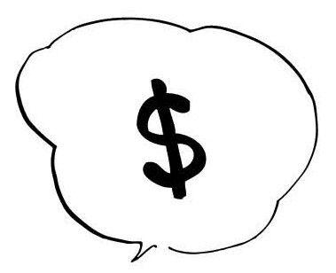
日本人が海外に行った時、戸惑うことが多いのが、チップの払い方だと思います。
まずタクシー、そしてホテル、さらにレストラン。誰に幾ら払っていいのか迷ってしまいますよね。
その前に、日本にはチップの習慣がないので、なぜ払わないといけないのかが分からないという方が多いと思います。まずそこからご説明します。
あ、ちなみに日本語では「チップ」ですが、英語の発音は「ティップ」に近いです。注意しましょう!!
レストランを例にあげると、チップはウェイターやウェイトレスに払うことになります。彼らももちろん給料はもらっているのですが、非常に安く抑えられています。というのも、その分をチップでカバーするという仕組みになっているからです。
「そんなまどろっこしいことをしなくても......」
と思うかもしれませんが、これはとても本当によく出来たシステムなんです。
チップの相場はだいたい支払う金額の15～20％ですが、素晴らしいサービスに対しては余分に払うことがよくあります。
逆に最低のサービスを受けたときは、数％しか払わなかったり、小銭だけにしたり、あまりにひどい場合は払わないことがあります。
日本ではどんなサービスを受けようが、一律にサービス料を払っていますが、アメリカでは払う額を自分で決めることができます。
つまり、ウェイターやウェイトレスは素晴らしいサービスをすれば収入が増えるので、一生懸命お客様が喜ぶように工夫して働くようになります。
お客様はそういった素晴らしいサービスを受けることができる。さらにレストランも給料を安く抑えることができる。三方良しの関係になっています。
「いやいや、別に余分に払わないですから」という方も当然いると思いますが、素敵な笑顔で迎えてくれ、食事中にユーモアと機転でお客さんを心から楽しませてくれる素晴らしいサービスに出会ったら、きっと納得して、余分に払ってあげようという気になると思いますよ。（そのサービスを受けたくて、そのお店に行くこともあります）
一流のサービスって本当にすごいです!!
ぜひ、堪能してみてください。
余談です。レストランでのお支払いですが、日本のようにお客さんがレジに直接行くことはなく、ウェイターやウェイトレスに目で合図をして（声を出して呼ばないこと！）、こちらに来てもらってから、
Check, please（お会計お願いします）
と言って伝票を持ってきてもらいましょう。
注） Check, pleaseと言わなくても、目で合図の時に空中に手で伝票に書き込むしぐさをするとすぐに伝票を持ってきてくれます。
そして、その場で支払いをします。その際、自分が払いたいと思える額のチップをプラスしましょう。（15～20％が相場）
おつりが不要な場合は、
You can keep the change.（おつりはとっといて）
と言うか、そのまま席を離れても大丈夫です。ちなみにクレジットカードで支払う場合は、伝票にチップの額を書く欄があるので、合計が端数にならないように計算して、書き込みましょう。（これが結構面倒）
ちなみにチップをあまり払わない人は、Bad tipperと嫌われるので、男性の方、気をつけてください。どの国でもケチな男は嫌われますよ!!
チップが必要なサービスには、タクシー、さらに美容院などがあります。なんと美容師にもチップが必要です。私は知らなくて恥をかきました。
さらに、ピザやお花を配達してきた人にも必要です。友人が、寝ぼけていて花束の配達係にチップを渡さなかった、とあわてて後で電話して余分に払っていました（笑）。
粋にチップを払う人って格好いいですよ!!
おわりに
まずは、この本を選び、最後まで読んでくださってありがとうございます。
冒頭にも書きました通り、私は帰国子女でもインターナショナルスクール出身でもなく、皆さんと同じように中学でThis is a pen.から英語を始めました。
そして、最終的には独学で、通訳者にまでなりました。
「英語ってどうやって勉強したらいいですか？」といろんな方からご相談を受けるなかで、あまりにも多くの方が英語を話せるようになるために遠回りをしている！と気付き驚きました。
英語を学ぶ方法はたくさんあると思いますが、英語力ゼロから通訳レベルになった経験から、この５歳児英語こそが、大人の日本人であるあなたが英語ペラペラになる最短にしてもっとも簡単な方法だと思います。
私は５歳児英語の定期講座という３ヶ月の講座を開催していますが、この５歳児英語を身につけることで、次のような声をいただいています。
――知識としての英語ばかりで、実際に使える英語にはほど遠かったけれど、５歳児英語により使える英語になってきたと思います。そのため、外国人上司とのコミュニケーションが以前よりスムーズになりました。
――口から英語が出てくるスピードが格段に速くなりました。要するに、日本語を経由することが少なくなってきていて、自分でもびっくりすることがあります。
――IT系の英語のメーリングリストにGoogle翻訳なしで投稿し、返事がもらえるようになりました。
――よりシンプルに考えることで、あきらめずに英語を話せるようになった。
英語は、単語や文法の学習に陥ると、永遠に先が見えなくなります。単語を覚えて、忘れて、覚えて...って苦しいですよね？
５歳児英語では、単語を新しく覚えることはありません。つまり、５歳児英語を身につけるだけで、あなたはすでに英語がペラペラになっているのです。
講座の受講生さんの中にはＡＢＣも怪しかったのに、５歳児英語を身につけて、アメリカにビジネスメールが書けるようになった、という方もいます。そして、「英語を話すのが楽しくなった」「英語って簡単なんですね！」と喜ばれています。
もしあなたが
「英語を真剣に勉強したい、でも今まで続かなかった......」
「英語ができるようになりたい！でも今まではうまくいかなかった......」
と思っているのであれば、英語がこれまでできなかったのはあなたのせいではありません。単に、５歳児英語をご存じなかっただけなのです。あなたがこの５歳児英語をマスターすれば、英語は必ず話せるようになります。
「なぜ、英語を勉強しないといけないんですか？」
たまに、このように聞かれることがありますが、一言でいうと、英語を話せて良いことはたくさん。悪いことは一つもないんです。
今後10年で約20億人が新たに英語を学び、世界の人口の半分近い約30億人が英語を話すようになる見通しだそうです。
ということは英語を話せると世界の約半数の人たちと自由にコミュニケーションがとれるということです。
英語が話せる人が少しでも増えて争いや偏見がなくなり、平和で暮らしやすい世界が作れたらいいな、と思います。
本書を最後までお読みいただきまして、ありがとうございました。また、このあとがきのあとに「巻末付録」として、和製英語や英語での電話応対などをまとめたものが入っております。
５歳児英語をマスターすれば、必ず、英語はペラペラになります。
この本を最後まで読まれたあなたなら、きっとできると信じています。
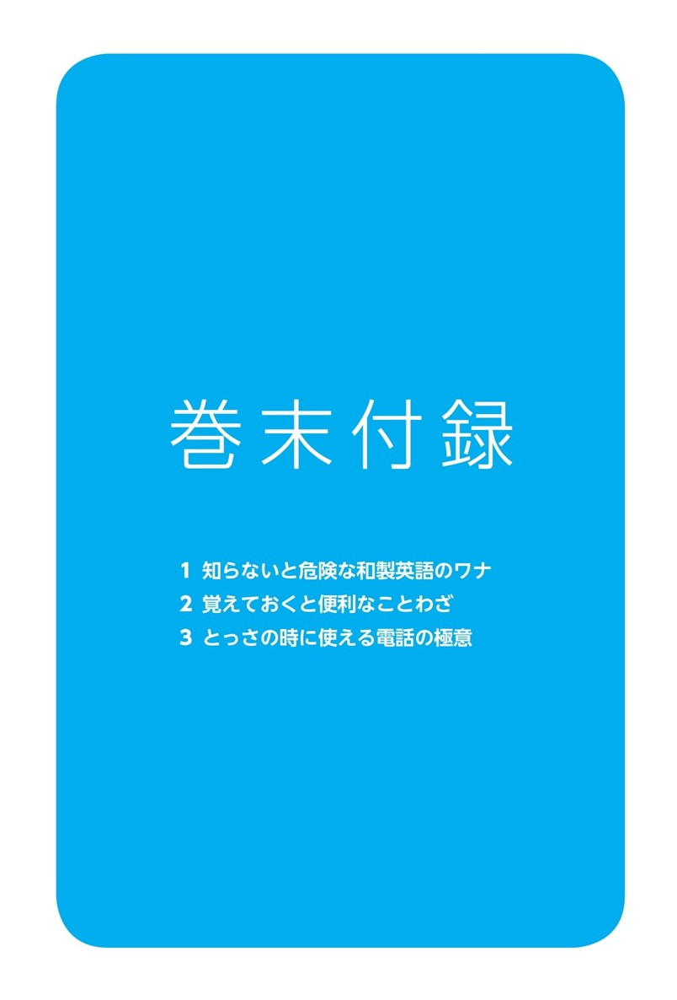
知らないと危険な和製英語のワナ
先日のことです。
「ポストはどこ？」と聞きたくて、ついWhere is the post?と言ってしまい、相手に「？？？」という顔をされDo you mean, mail box?「mail boxのこと？」と言われてしまいました（笑）。
そう、ポストは英語でpostではなくmail boxなのです。日本語は外来語、というか和製英語が大変多く、一見、「完璧に英語でしょ！」と思うものでも英語圏では通じない......ことがよくあります。
誤解されがちな言葉
ナイーブ sensitive（繊細な）
naïveは「世間知らずな・単純な・素朴な」という意味です！ 悪い意味なので注意！
スマート slim
smartは「頭のいい」という意味です。
ラフ casual（カジュアルな）
roughは「荒い・無作法な・下品な」といった悪い意味なので注意！
食べ物系
フライドポテト french fries
フライドポテトだと英語では「ジャガイモの丸揚げ」という意味になってしまいます。
バイキング buffet
バフェと発音する。Vikingは8世紀から10世紀に暴れまわった北欧の海賊。
シュークリーム cream puff
シュークリーム（shoe cream）は靴磨きのクリーム？
ソフトクリーム soft ice cream
アイスキャンデー popsicle
文房具
ホッチキス stapler
ボールペン pen
セロテープ scotch tape
車や家関係
フロントガラス windshield
オープンカー convertible
アクセル accelerator
アフターサービス customer service
オートバイ motorcycle
ガソリンスタンド gas station
パトカー patrol car
マンション apartment
マンションは「豪邸」という意味。日本でいうマンションは英語ではapartmentやcondo。よく間違うので注意！
ワンルームマンション studio
キャッチホン call waiting
電子レンジ microwave
ヘルスメーター bathroom scale
リンス conditioner
rinseは「すすぐ」という意味。
そのほか、とっても「英語らしく」聞こえる言葉
サラリーマン office worker／white-collar worker
OL office worker（男女の区別無しに）
ビジネスマン office worker
英語のbusinessmanは実業家や会社の経営者または商売人のこと。会社員や勤め人といった意味はない。
カンニング cheating
cheatは「不倫、浮気をする」という意味もあります。
cunningは「ずるい、悪賢い」という意味です。
クレーム complaint
claimは、動詞では「要求する・主張する」名詞では「要求・請求」の意味。
タレント celebrity／TV personality
talentは「才能」という意味。
シーズンオフ off-season
ベテラン expert
veteranは通常は退役軍人のこと。
ベビーカー stroller
キャッチボール play catch
catch a ballは「ボールをキャッチする」となる。
フリーダイヤル toll-free
モーニングコール wake-up call
ガードマン watchman/security guard
オーダーメイド custom-made
スキンシップ personal contact
バージンロード the aisle
いかがだったでしょうか？
和製英語って日常生活にあふれていますよね！
海外では通じないので注意が必要ですよ。
覚えておくと便利なことわざ
大昔にやり取りがあったわけでもないと思うのですが、なぜか日本語と英語で似ていることわざがたくさんあります。いくつか紹介しましょう。
▼ 「覆水盆に返らず」
It's no use crying over spilt milk.
（こぼれてしまったミルクを嘆いても仕方がない）
▼ 「一石二鳥」
Two birds with one stone.
（1つの石で２羽の鳥）
▼ 「知らぬが仏」
Ignorance is bliss.
（無知は無上の喜び）
▼ 「時は金なり」
Time is money.
（時間はお金）
▼ 「人は見かけによらない」
Don't judge a book by its cover.
（本を表紙だけで判断してはいけない）
▼ 「火のないところに煙は立たぬ」
There is no smoke without fire.
（火なしで煙はない）
▼ 「隣の花は赤い」
The grass is always greener on the other side of the fence.
（隣の家の芝生のほうがいつでも青く見える）
逆に英語らしいのは「靴」の表現です。
If you were in my shoes...
（もしあなたが私の立場なら...）
Put oneself in a person's shoes
（人の立場にたって考える）
「他人の靴をはく＝他人の身になって考える」というのが面白いですね。ことわざは基本的に古くからあるものなので日本には「靴」に関する表現はありません。
とっさの時に使える電話の極意
電話で英語を話すって緊張しますよね～！
直接話していればどんな人か大体わかりますが電話の相手はどんな人か分からないし、ボディランゲージもできません。
また、電話を切ったり、話の途中で話題を変えたりするときにどう言えばよいのかわからない！ という声もよく聞きます。
私もいまだにカスタマーセンターなどに電話をかけなければいけないときは緊張します。
相手が言うことが予測不可能だと「助けて～！」と思います（笑）。
話題を変えるときの表現
●丁寧な表現
I wanted to ask you.
「お聞きしたいことがあったのですが 」
I wanted to tell you.
「お話したいことがあったのですが... 」
例
I wanted to tell you about my son.
「息子のことでお話したいことがあったのですが」
●カジュアルな表現
Oh, by the way.......「ところで」
Hey, speaking of which.......「そういえば」
You know what?......「ねえねえ、聞いてよ」
例１
Hey, speaking of which, guess who I ran into yesterday.
「そういえば、昨日誰に会ったと思う?」
※run into = ばったり会う
例２
You know what? I lost my wallet yesterday.
「聞いてよ、昨日財布落としちゃった!」
例３
So, what did you do yesterday?
「で、昨日何をしたの？/それで、昨日を何されたんですか?」
電話を切りたいときの表現
●丁寧な表現
I'm sorry +切りたい理由
例１
I'm sorry, I have to get back to work.
「すみません、もう仕事に戻らないと」
例２
I'm sorry, I'm in the middle of something.
「すみません、ちょっと手が離せなくて」
例３
I'm sorry, I have to go.
「すみません、もう行かなければ」
●カジュアルな表現
例１
Okay, anyways, I gotta go now.
「もう行かなきゃ」
例２
Okay, I'll talk to you later.
「じゃあまた後でね」
そのほかの便利な電話英語表現
「もしもし」 ......Hello.
「少々お待ちください」 ......Hold on, please.
「どちら様ですか？」......Who's calling?
「～さんをお願いします」 ......Can I talk to ～
「私です（今話しています）」 ......Speaking.
「伝言しましょうか？」 ......May I take a message?
「かけ直してもらえますか？」 ......Please call me back later.
「また電話します」 ......I'll call you again.
「彼は今出かけています」 ......He's not in right now.
「話し中でした」 ......The line was busy.
「電話ありがとう」 ......Thank you for your call.
「もう少しゆっくり話してください」
Could you speak a little more slowly?
「もう少し声を大きくしてください」
Could you speak up a little?
「間違った番号におかけですよ」
You have the wrong number.
【著者】
奥村美里
株式会社フェリシオジャパン代表。
早稲田大学商学部卒業後、専門商社で海外営業を数年務める。
モスクワ派遣から帰国後に、株式会社フェリシオジャパンを設立し、独立。通信講座「ネイティブ英語環境」「つぶやき英会話」「英語反射神経」「アウトラウド講座」を運営。2 万5000 人以上の方に英語学習についてアドバイスをしてきた。現在は「5歳児英語」のセミナーや通信講座を中心に活動している。
http://nativeenglish-env.com/
ニューヨークタイムズ第１位のベストセラー「ミリオネア・マインド 大金持ちになれる人」の著者、ハーブ・エッカーの同時通訳をきっかけに、「金持ち父さん、貧乏父さん」の著者ロバート・キヨサキ、世界トップコーチのマイケル・ボルダックなど、世界でも有数のスピーカーの同時通訳の実績を持つ。
「１日一分で身につく５歳児英会話メールセミナー」
詳しくは下記からどうぞ。
http://nativeenglish-env.com/present/
英語は5歳児の日本語で考えると
面白いように話せる！
発行日 2013年10月4日
著 者 奥村美里
発行人 松村 徹
編集人 松隈勝之
発行所 きこ書房
〒163-0222
東京都新宿区西新宿2-6-1
新宿住友ビル22 階
電話 03-3343-5364
ホームページ
http://www.kikoshobo.com
編 集 庄内美帆里 元木優子
©MISATO OKUMURA 2015
※本書は『英語は5歳児の日本語で考えると面白いように話せる！』 （2013年10月4日発行）を電子書籍化したものです
※本書をご覧になる環境によってレイアウトに差異が生じる可能性があります
※無断転載・複製を禁ず
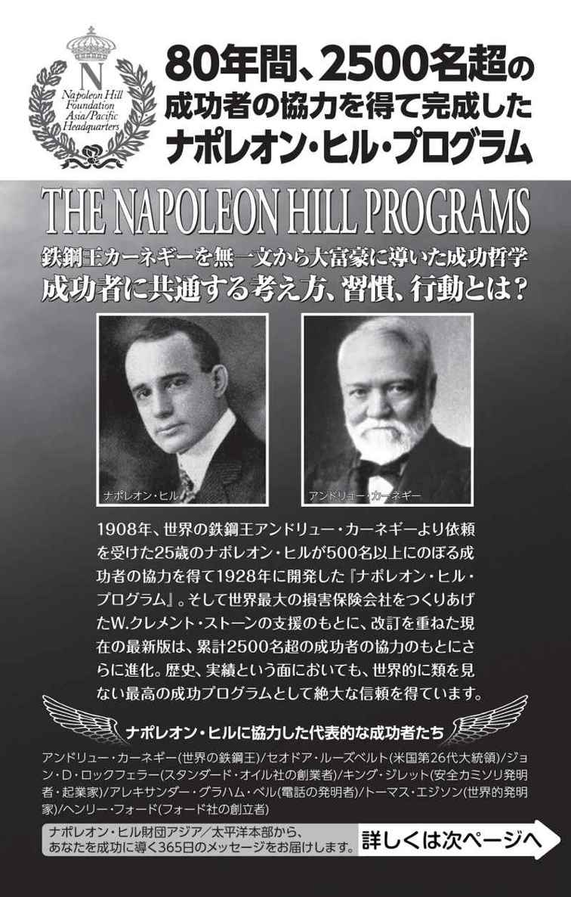